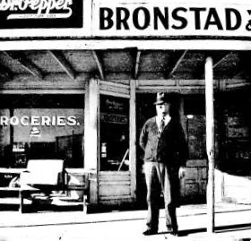

Birth Family of Gilbert Walton Bronstad
Father,  Clyde Purnell Bronstad, [FS Data] born 1896-06-20 in Cranfills Gap, TX, married Louise 1936-07-19 in Waco, TX. He died 1989-12-26 in Clifton, TX, and is buried at St Olaf's Cemetery
Clyde Purnell Bronstad, [FS Data] born 1896-06-20 in Cranfills Gap, TX, married Louise 1936-07-19 in Waco, TX. He died 1989-12-26 in Clifton, TX, and is buried at St Olaf's Cemetery
Walt's Fatther, Father, Clyde was a first generation American of scandinavian ancestry.
Mother,  Louise M (Walton)(Holbrook) Bronstad, [FS Data] was born 1908-04-23 in Hamilton Co., TX; she died 1989-08-18 in Fort Worth, TX, and is buried at St Olaf's Cemetery.
Louise M (Walton)(Holbrook) Bronstad, [FS Data] was born 1908-04-23 in Hamilton Co., TX; she died 1989-08-18 in Fort Worth, TX, and is buried at St Olaf's Cemetery.
Walt's Mother, Louise was an American of 17 th century American roots.
Brother,  Winnon Glenson (Bob) Holbrook, [FS Data 1] [FS Data 2] was born 1932-05-08 to Louise and Marshall O Holbrook in Wascom, TX. Bob died 2012-11-21 in Brillion, WI, and part of his cremains are buried at St Olaf's Cemetery.
Winnon Glenson (Bob) Holbrook, [FS Data 1] [FS Data 2] was born 1932-05-08 to Louise and Marshall O Holbrook in Wascom, TX. Bob died 2012-11-21 in Brillion, WI, and part of his cremains are buried at St Olaf's Cemetery.
Self  Gilbert Walton Bronstad [FS Data 1] was born in 1940 in Cranfills Gap, TX.
Gilbert Walton Bronstad [FS Data 1] was born in 1940 in Cranfills Gap, TX.
Sister Bette Louise Bronstad  Bette Louise Bronstad was born 1946.
Bette Louise Bronstad was born 1946.
[FG Data]: Find a Grave data: https://www.findagrave.com/
[FS Data]: Family Search data: https://www.familysearch.org
[LRF Data]: Linton Research Fund data: http://linton-research-fund-inc.com/
[Walt Data]: This site, Walts memories: https://gwbronstad.github.io/Walt-Kin/
Family of Walt and Pat Bronstad
Wife,Patricia "Pat" Margie (BIRD) Bronstad was born 1941-01-30 in Fort Worth, TX, she married Walt 1961-02-24 in Fort Worth, TX; Patricia died 2023-11-06 in Knoxville, TN, and will be buried at St Olaf's Cemetery.
Son, Philip Matthew Bronstad, was born 1972.
Daughter, Katherine Olivia Bronstad, was born 1976.
Daughter, Laura Kristina Bronstad, was born 1976
1940-1949
The Clifton Record (a Bosque County, Texas weekly newspaper) recorded the comings and goings in quiet neighboring areas like Cranfills Gap; all the better to increase readership beyond Clifton, TX. I mined microfilm of the Clifton Record for family references. I saw slimmest images of my coming into the social awareness of the Gap, much as one might see, passing a wooden fence, a kinetoscopic view of a neighbors back yard. Slim little images my past like:
1940-10-11
On Tuesday morning, September 24, a son was born to Mr. and Mrs. Clyde Bronstad. He has been named Gilbert Walton and is a fine, healthy child, He and his mother are reported to be doing nicely.
Hello World
As best as I can remember, I was born in my parents home, in my parent's bed, delivered by family friend, Dr J. R. Shipp, in a tiny Texas town where dwelt my grandmother, two uncles, and three aunts. So agreeable to greet land life in so familiar a place. That tiny pond of my own pee was impossibly cramped.
.png)
- Dad had built a house to please Mom.
- Mom had borne a son to please Dad.
- Family and kin were gentle, loving souls
- All seemed well.
Brother Bob, me, and cousins Maurice and Gorlyn.
Mom's pressure cooker was a great toy till I tottered onto the steam vent and got a scar. Luckily it was between my eyes, not on left or right. Mom took the toy away though.
Bob was a fine horsey, but, lacking a crop, my using a toy mallet while commanding "giddyup." generated a life-long sore point for Bob.
I used to think my hot refusal of baby food had to do with unsweetened pablum, now I think, for an infant, cow's milk is a poor substitute for Mother's milk. And that founded my plaint. The word 'weaning' came up often in my childhood.
z318 ✓
This concept has been highly influential in the field of memory studies, shaping discussions elsewhere in Europe, the United States and Asia about how memory functions in societies, particularly in how nations remember and forget.
At an individual level, much of my memory is attached to place (e.g. a dwelling); and if not place, to person.
1941-04-18
Mr. and Mrs. Homer Bronstad and two sons of Blanket, Texas, visited relatives here this week-end. . . . Mr. and Mrs. Walton of Hamilton, and Miss Janetha Walton of Fort Worth were Sunday guests on theClyde Bronstad home.
1942-01-02
Mr. and Mrs. Clyde Bronstad and sons, Bobby and Walton, spent Christmas day with her parents, Mr. and Mrs. W. T. Walton of Hamilton…
1942-04-17
Mr. and Mrs. Clyde Bronstad and sons, Bobby and Walton, were guests Sunday in the home of her parents, Mr. and Mrs. W, T, Walton of Hamilton.
1942-05-08
Mr. and Mrs. Clyde Bronstad and sons, Bobby and Walton, and Miss Marguerite Bronstad were business visitors in Fort Worth Saturday.
1942-05-15
Mr. and Mrs. Clyde Bronstad and sons, Bobby and Walton, spent Sunday with her parents, Mr. and Mrs. W. T. Walton of Hamilton. .Bobby remained to continue his visit for several days. .
1942-06-12
Mrs. S. H. Walton came in last Saturday from her home at Wichita Falls for a visit in the home of her brother-in-law and sister, Mr. and Mrs. Clyde Bronstad. She returned home Tuesday accompanied by Mrs. Bronstad and sons, Bobby and Walton . . . .
1942-07-05
Mr. and Mrs. Clyde Bronstad and sons, Bobby and Walton, spent Sunday with her parents, Mr. and Mrs. W. T. Walton of Hamilton. . . .
1942-10-30
Mr. and Mrs. Clyde Bronstad and sons, Bobby and Walton and Miss Vivian Embrey were in Hamilton Sunday visiting relatives.
1943-02-19
Mr. and Mrs. Clyde Bronstad and sons, Bobby and Walton, visited with her parents, Mr. and Mrs. W. T. Walton near Hamilton. . . .
1943-08-20
Mr. and Mrs. Clyde Bronstad and sons, Bobby and Walton, of Belmead were overnight visitors with his mother, Mrs. G. O. Bronstad Sunday.
1943-09-03
1943-10-29
Mr. and Mrs. Clyde Bronstad and sons, Bobby and Walton, of Belmead were visited at the home of Mrs. G. O. Bronstad Saturday while en route to visit her parents, Mr. and Mrs. W. T. Walton of Hamilton. They were also accompanied by Miss Jacqueline Johnson of Waco who spent the week-end here with relatives..
1943-11-12
Mrs. Clyde Bronstad and sons, Walton and Bobby, returned to their home at Bell Mead Tuesday following a visit with her parents, Mr. and Mrs. W. T. Walton of Hamilton and her mother-in-law, Mrs. G. O. Bronstad of Cranfills Gap, . .
1943-12-10
Mr. and Mrs. Clyde Bronstad and sons, Bobby and Walton , of Bellmead were dinner guests Sunday in the home of Mr. and Mrs. Homer Bronstad. . . .
1943-12-31
Mr. and Mrs. Clyde Bronstad and sons, Bobby and Walton, of Bellmead were visitors in the Chris L. Rohne home Sunday. . . .
1944-01-14
The following were guests in the home of Mr. and Mrs. Clyde Bronstad of Bellmead Sunday: Mr. and Mrs. O. J. Bronstad, Allen and Charlene, Miss Marguerite Bronstad, Mr. and Mrs. Chris L. Rohne, Geraldine and Marynell.
Mr. and Mrs. Clyde Bronstad and son, Walton, were here from Bellmead Monday, for a short visit with relatives.
1944-02-11
Mr. and Mrs. Clyde Bronstad and sons, Bobby and Walton, were here Sunday from their home at Bellmead, visiting in the home of his mother, Mrs. G. O. Bronstad.. . .
1944-03-24
Mr. and Mrs. Clyde Bronstad and sons, Bobby and Walton, of Belmead were spent Sunday night and Monday with his mother Mrs. G. O. Bronstad and other relatives and friends.
1944-04-14
Mr. and Mrs. Clyde Bronstad and sons, Bobby and Walton, of Bellmead were here for a visit in the home of Mr. and Mrs. Chris L. Rohne.
1944-04-21
Mr. and Mrs. Clyde Bronstad and sons, Bobby and Walton, of Bellmead were here Tuesday, enroute to Hamilton to visit Mrs. Bronstad's parents, Mr. and Mrs. W. T. Walton. . . .
1944-06-23
Mr. and Mrs. Clyde Bronstad and son, Walton, of Bellmead visited in the O. J. Bronstad and Mrs. G. O. Bronstad homes Tuesday.
1944-11-03
Mr. and Mrs. Clyde Bronstad and son, Walton of Bellmead, Mr. and Mrs. Oran Knudson and children of Hamilton were dinner guests Sunday in the home of Mr. and Mrs. Homer Bronstad.
1944-12-01
Mr. and Mrs. Clyde Bronstad and son, Walton, of Bellmead, were here Saturday for a visit with his mother, Mrs. G. O. Bronstad, and to attend the Bronstad-Murphree wedding.
Occupants
I slept between Clyde and Louise in the back bedroom double bed, my middle name could have been 'contraceptive'. Bob had the front bedroom all to himself. Frequently there was a fifth person there, but I don't remember who or where she slept. Some times "she" was Vivian Embrey, one of Mother's first cousins. During wartime there were better and higher uses for able workers, and Vivian probably responded accordingly.
Crayons
Clyde heated the living room with a massive, fuel oil furnace. The outside was enamel brown. I loved Crayolas. I loved the intense colors of Crayons but found them faithless. Yes, one could draw a line on paper with the red crayon, but it had betrayed the brilliance of the Crayola, the drawn line lost saturation. It betrayed it's promise.
Bob applied the Crayola to the heated, brown enamel surface, he draw a drippy line that retained the saturation of the wax crayon. This was wonderful; Crayolas became faithful; they fulfilled, the red, yellow, green, violet and blue promises, even white kept it's promise on brown enamel.
The smell of liquid Crayola soon got my parents attention; they rushed out of the kitchen into the living room, alerted by an unfamiliar odor. They cavalierly stopped my artistic endeavors with some incomprehensible warning about fire. I saw no fire, but stop I must.
Later, my artistry could be out of view if I crawled behind the furnace on my belly, reaching for Michelangelo‘s artistic height. The odor continued to give me away. Soon spring ended the need for heat and withdrew the magic canvas.
Clyde and Louise worked.

And so did Bob for a while. In addition to school work, Bob had a bike and a paper route delivering one of the Waco newspapers of the time. Until some thuggish lads beat up Bob. His face bruised, forearms checkered with menacing scabs. Father and Mother thought it better Bob quit the job and avoid danger.
Wally in Bob's workplace.
Mother left to teach at LaVega Public School before I woke. Father had the afternoon shift at Blackland Army Flying School, he left before Mother got back home. This was bad, being left alone, so watching father get ready for work, I got into the '36 Ford before he got in and would not leave.
That was a problem for Clyde, he could not take me to Blackland, could not leave me at home because I threatened to follow him on foot. He drove along struggling with the dilemma I posed. He grasped upon, "I'll have to give you to a Nigger Lady." The threat didn't really process until Clyde pulled alongside an Afro-American woman walking along the roadside; Clyde rolled down the passenger window and said, "Hey lady, would you like a little boy?". I looked into her strange, astonished face and screamed, "I'll stay home! I'll stay home!"
Clyde ended such further strife by locking the car doors at home. But that didn't fix my need for security, for having an adult around. There was a war going on, who'll save me from the Nazis? One day, as Clyde slid in behind the wheel, door half closed, I ran up, jumped on the running board and grasped the external hinge of the '36 Ford driver's door. When the door fully shut, the closing hinge burst my right middle finger like a balloon. I remember no more, but I'm sure the event was traumatic for both Clyde and me. 80 years later the finger is still looks slightly mangled.
What to do with toddler Wally during wartime? Too young to become a latch-key kid, Mom took me to day care with periods of outdoor play (A play mate introduced me to pill bugs.), naps on cots (I was scandalized that boys and girls went together in the same toilet room.), and finger paint or other arts.
On one rare visit to Mother's school, I was drawn to the many profiles of American, Nazi and Japanese war planes, arrayed on the walls above eye level. I learned 'theirs' from 'ours', bombers from fighters.
Like our war birds flying oft above, school posters, radio news and bulletins, and movie newsreels kept the Axis menace ever close to our thoughts.
Great genitalia show off.
I knew no preschoolers south of our house, but quite a few of us were to be found to the north. Next door was Gordon Johnson, a playmate. Gordon connected with more children north to the street corner. One bright day, a juvenile organizing genius had set up among 8 or so preschoolers a deal whereby one child stood security guard against adults at the garage door while boys and girls within might drop their pants to reveal their genitalia to each other.
Well I wasn't going to miss out on that. I had already intuited that sex was powerful, hidden and forbidden, no way I would walk from this apocalypse.
The planning was good but the staging dreadful. With garage doors shut there was almost no light for seeing. Actors were skittish lest a parent appear and punish taboo breakers. The Bellmead 'Naughty Bits Review' broke up almost before it began. It was ever more puzzling that adults could get so worked up over something so uninteresting.
Visitors.
The Clifton Record records many visitors to 1224 Lewis Ave.; I recall but two. Mother's sister Aubrey's visit was memorable because of the rainy night drive to the train station to pick Aubrey up (or send her off, not sure)
Mother's sister Annie Joy made her visit memorable because she tried to stick me with a nickname. As a bow-legged preschooler with a ten inch stride, my corduroy cuffs whipped past each other with a 'thwip-thwip' sound. Probably amused at my sound, she called me "twisty britches".
What has stayed with me is the preparation. Visitors meant large meals and large meals centered around one or more chickens. Clyde would dispatch a live bird by lodging it's neck between crossed clothes line wires. Then flip the bird to shorten it's suffering. Plunging the bird in a pail of boiling hot water helped Louise pluck the chicken clean of feathers. Then she or Clyde would butcher the bird(s) into what became dinner-table chicken anatomy. Drum stick, thigh, back, wing, breast, liver, gizzard, neck, wish bone.
Medicine.
Childhood anemia posed a dilemma: either get iron shots in the gluteus maximus or eat animal liver. Promising to eat liver put off the jabs and eventually liver tasted really good.
On my parents turn to promise, they promise me all the ice cream I wanted if I'd submit to Dr Aid's removing my tonsils. Dr Aid laid me down on an ironing table and began to suffocate me with a handkerchief while my parents held me down. He poured perfume on the handkerchief and I recall no more till I awoke. Groggy, throat on fire, I wanted no ice cream. Nothing. Trust corroded.
z228 ✓
1945-02-16
Mr. and Mrs. Clyde Bronstad and son, Walton, of Bellmead, were here Saturday for a short visit with his mother, Mrs. G. O. Bronstad, and other relatives…
1945-02-23
Mr. and Mrs. Clyde Bronstad and sons, Bobby and Walton, of Bellmead, were here Saturday for a short visit with his mother, Mrs. G. O. Bronstad, and other relatives… .
1945-04-20
Mr. and Mrs. Clyde Bronstad and sons, Bobby and Walton, of Bellmead, spent Saturday night with relatives and friends. The main reason for their visit was to visit Mr. Bronstad’s brother, Homer Bronstad, on leave from San Diego, California… .
1945-05-18
Guests in the Mrs. Homer Bronstad home Sunday were Mr. and Mrs. Mervin Knudson and Miss Lo Verne Rohne of Fort Worth, Mr. and Mrs. Clyde Bronstad and sons, Bobby and Walton of Bellmead, Mr. and Mrs. Oran Knudson and children, Myron, Kathryn Sue and John Benjamin and Mr. and Mrs. Ted Christenson and daughter, Mary Carolyn of Hamilton; Mr. and Mrs. K. M. Knudson, Mrs. G. O. Bronstad and daughter, Marguerite, and Mrs. Harry Blue and daughter, Rebecca of Cranfills Gap.
1945-06-22
Mr. and Mrs. Clyde Bronstad and sons, Bobby and Walton, of Bellmead, were in Cranfills Gap Tuesday visiting his mother, Mrs. G. O. Bronstad, en route to Hamilton for a visit with Mrs. Bronstad’s father and mother, Mr. and Mrs. W. T. Walton… .
1945-09-07
Mr. and Mrs. Clyde Bronstad and son, Walton, of Bellmead, were here Sunday attending the Jenson Golden Wedding Anniversary and visiting his mother, Mrs. G. O. Bronstad, en route to Hamilton for a visit with her parents, Mr. and Mrs. W. T. Walton
1945-09-14
Mrs. Homer Bronstad and sons, Gorlyn, Maurice and David, Mrs. G. O. Bronstad and daughter, Marguerite, Mr. and Mrs. Chris L. Rohne and daughters, Geraldine and Marynell were dinner guests Sunday in the home of Mr. and Mrs. Clyde Bronstad of Belmead.
1945-10-19
Mr. and Mrs. Clyde Bronstad and sons, Bobby and Walton, of Bellmead, were in Cranfills Gap visiting his mother, Mrs. G. O. Bronstad and other relatives.
This trip had a visit to the Bronstad Store run by Uncle Homer and Aunt Travis. They were so glad to see us. They showed us shelves stocked with school supplies. I scanned the merchandise and took a box of Crayolas.
Clyde and Louise had not observed the 'present' I'd taken from Aunt and Uncle. On going back to the car Mother saw and so disapproved. She returned my 'present' to Homer and Travis. Commerce so confused me, "but they were so glad to see me, and they had more than they used."
Clearly, it was not easy getting on with this world.
1945-11-02
Guests in the home of Mr. and Mrs. Homer Bronstad Sunday were Mr. and Mrs. Mervin Knudson and Miss LoVerne Rohne of Fort Worth, Mr. and Mrs. Clyde Bronstad and sons, Bobby and Walton, of Bellmead, and Mr. and Mrs. Oran Knudson and children, Myron, Kathryn Sue and John Benjamin, of Hamilton.
It looks like all the family have returned to Cranfills Gap from Bellmead sometime in November 1945. Did Mother not teach at all in the 1945 school year? Why did they not return to the house Clyde built on the corner of Clifton and 2nd Streets? When and how did ownership of that house transfer?
Perhaps the first few nights of the family’s return from Waco to Cranfills gap were spent in Grandmother Bronstad’s house. The whimsy of memory faithfully records a night of relocation when Father, Mother and I were in the abbreviated Murphy bed of the west-most, downstairs bedroom. It was at night that I had to poo. The stress of relocation must have affected me well before we left Waco, I did a manful job for a five year old of nearly filling the chamber pot. Took a while too. Father was tired of the interruption of sleep, he suggested I save a little for tomorrow.
z228 ✓
1945-12-07
Mr. and Mrs. Clyde Bronstad and son, Walton and Mrs. G. O. Bronstad and daughter, Marguerite, were visitors in Waco last Thursday.
1945-12-28
Mrs. Clyde Bronstad and son, Walton, spent Sunday in Hamilton visiting her parents, Mr. and Mrs. W. T. Walton and her sister, Miss Aubrey Walton of Washington, D. C.
Mother thought it clever decoration, I think it Aunt Aubrey's affirmation of her own existence after experiencing the withering threat of tuberculosis before antibiotics.
Mother may have thought that too, but deferred trying to explain that to a child.
1946-mm-dd
To Clyde and Louise, Bette Bronstad is born.
1946-03-01
Mrs. Clyde Bronstad and son Walton, spent Saturday in Waco.
Downtown Waco was immense to a lad whose notion of civilization were calibrated by village Cranfills Gap. I could gawk at the policeman's sidearm, multistory brick buildings, traffic lights, store windows approaching the size of some Cranfils Gap dwellings. The pneumatic messaging systems in the department stores was magical technology.
1946-03-15
Mr. and Mrs. Clyde Bronstad and sons, Bobby and Walton, spent Sunday in Fort Worth, visiting in the home of Mr. and Mrs. W. E. Walton.. . .
1946-05-17
Mr. and Mrs. Clyde Bronstad and sons were in Hamilton Sunday for a Mother’s Day visit with Mrs. Bronstad’s father and mother, Mr. and Mrs. W. T. Walton.
1946-05-31
Mr. and Mrs. Clyde Bronstad and sons spent Sunday with their parents and grandparents, Mr. and Mrs. W. T. Walton of Hamilton.
1946-06-07
Mr. and Mrs. Clyde Bronstad and sons spent Sunday in Fort Worth visiting in the home of her brother, W. E. Walton and family. Mrs. Clyde Bronstad and sons, Walton and Bobby, left Sunday for Odessa for a visit with her sister, Mrs. W.E. Mapp and family.
Uncle Ernest was clearly more prosperous than we, he owned multiple flat bed trucks, a new Mercury automobile, and an 8mm projector. We watched Abbott and Costello features outside at night in the back yard.
1946-08-09
Mrs. Clyde Bronstad and sons, Bobby and Walton, spent several days in Fort Worth last week on account of the illness of Mrs. Bronstad’s mother, Mrs. W.T. Walton of Hamilton.
1946-09-06
Mr. and Mrs. Clyde Bronstad and sons, Bobby and Walton, returned Tuesday from Wichita Falls, following a visit with Mrs. Bronstad’s brother-in-law and sister, Mr. and Mrs. S.H. Walton
1946-10-04
Mr. and Mrs. W. T. Walton of Hamilton visited in the home of their daughter and son-in-law, Mr. and Mrs. Clyde Bronstad Tuesday. . . .
1946-10-25
Mr. and Mrs. Clyde Bronstad and son, Walton were in Hamilton Thursday afternoon of last week to attend the funeral of Mrs. Bronstad’s aunt, Mrs. J. B. Walton, of Carlsbad, N. M.
1947-01-17
Mrs. W. T. Walton returned to her home at Hamilton Tuesday after a few days' visit in the home of her daughter and son–in–law, Mr. and Mrs. Clyde Bronstad and especially to see her new granddaughter.
1947-06-13
Dickie Mapp of Odessa is spending the week visiting in the home of his uncle and aunt, Mr. and Mrs. Clyde Bronstad.
1947-07-18
In a deal that was consummated Tuesday of this week, Mr. E. A. Thompson of Hico sold his farm adjoining town to Mr. R. O. Blum, formerly being the Mrs. M. J. Mickelson place.
For Clyde and family the Blum house was wonderfully spacious, having more rooms than we could purpose. One or more upstairs rooms was locked, securing others' property, (Mrs. M. J. Mickelson? Mr. E. A. Thompson?) there was a sewing room in which very little was sewn, my bedroom and Bob's bedroom. Downstairs was a smallish kitchen, an enclosed back porch, a bathroom complete with a heat-on-flow hot water heater that intimidated Clyde, a large dining room, an entry room and a family room.
Though I haven't been on that property in over 3/4 of a century, it still houses many of my childhood memories. In that house, —
- Though I had been ill before, in the Blum house I was first aware of being ill, spending nights on an Army surplus folding cot in the kitchen. Perhaps for warmth, perhaps for medicated steam.
- Bob suffered mumps in his adolescence; he was quarantined to the back, enclosed porch; Dick and I were sternly warned to keep our distance, both to avoid disease and to avoid the wrath of an inexplicably testy Bob.
- Mother taught me love of the pussy–willow catkins bulging day by day in spring warmth, until the slough of spring hail surrounded the house and shocked the pussy–willow into pause.
- I witnessed Mother making her nest for her new chick.
- New–born Bette came home as an infant, separating me from a Mother's attention.
- We would gather around the dining table to play dominoes, or play with my new Christmas present, a Big-Bang Canon.
- Mother began teaching me to read.
- In fall of 1946 I began elementary school. Miss Jackson was both my 1 st and 2 nd grade teacher in Cranfills gap's 3 x 2 room elementary school. Tall windows and big light globes made it bright inside. Each room had 5 foot cylinder, wood fired stove for heat. Each desk had a hole for an ink well and we learned to write both with pencil and (riskier) steel nib pens dipped in ink. Restrooms were outside in a cinder block restroom added on to an older, middle school building. The cafeteria was uphill, past the woodpile. All children were fed lunch. At recess, we were largely left to our own devices.— which infrequently were fights among boys.
- Disney comic books became my reading choice.
- Aunt Travis sold us The World Book Encyclopedia.
- World Book illustrations of WWI and WWI military kit refueled a little boy's fascination with war.
- I got a pet white rabbit, which I was hopeless at taking care of.
- Later, I got a dog, with results no better.
- Rather than wear my bright red shirt-jacket past the bull grazing in a field along my path to school, I played hokey. Mom and Dad couldn't understand how dangerous wearing red near a bull was. But then, they probably had not seen the right movie cartoons.
- One Christmas I got a Gilbert's Chemistry Set. My Cousin, Janetha June did well at TCU, studying chemistry, but no one in the house could field my questions about chemistry.
- For the better part of one summer, (probably the summer of 1947) I owned Mother, all to my own, — except for little sister who slept a lot. Clyde and Bob were away in Kansas and states further North, earning money on wheat harvesting crew. (This was the summer Clyde and Homer sold out to Clarence Johnson and Homer resumed his career in Public Education.) They returned by train, we met them, late at night at the train station in Meridian. Bob brought me back tiny black and white plastic Scott terriers mounted on magnets.
- I got my clock cleaned and a first lesson in astronomy when I insisted on playing football with much larger Bob and Arlen Rohne.
- Mother showed me milkweed in the front pasture and it's importance to Monarch Butterflies.
Post WW II, Clyde believed, would see a return of a depression. Maybe this was more an argument for Mother's benefit, clearly family ties to Cranfills Gap would help him resist the Urban pull that urged so many away from Bosque County to urban areas like Fort Worth, Dallas, Houston and San Antonio. His family model was of a Father passing a livelihood on to a son, even though, in his Father's case, that son was the oldest boy, Otis. But Otis had switched from Bronstad store to Gap Postmaster. Now the two younger sons, Clyde and Homer gave the rôle of merchant a go. That model of legacy likely led Clyde to showing me some of the work of business.
Clyde some times took me with him to country locations connected to store commerce. We visited a farmer who sold him a cow. The farmer led the beast to the prepared place; wanting to dispatch the cow with most certainty, he took very careful, close aim with his .22 rifle, fired and the beast obediently collapsed in place. Clyde and the farmer went about the familiar work of butchering an animal into food.
Another time, Clyde took me into the countryside where a man made rope. We watched as the clever but simple machine braided smaller strands into into lengthening and stronger rope. There was something strangely furtive about the approach to the property and the exchanges between the man and Clyde. Almost fourscore years later, my guess is that hemp growing was again made illegal after the end of WW II, and this farmer was still pursuing a livelihood growing hemp for rope.
Gul, (Norwegian for yellow) was Grandma Bronstad's yellow tabby. His yellow coloring gave poor protection from Central Texas' intense sun; he developed an ugly cancerous lesion over his yellow-white nose. Family consensus was that Gul's got to go. The onerous task fell to Father. I got wind of the mission; for me, "death" was but a word, I wanted to see it.
Father disliked guns, he never bought one, once he had near fatally shot himself in the thigh. He borrowed a .22 rifle from a friend and took me, Gul, the rifle around the mountain. The road, was a dirt road, Wiese street going past Aunt Margaret's gravel pit (which during highway building gave Aunt Margaret a little income) around to geographic "Cranfill's Gap" a low space (1070 feet) between "mountains", almost the other side of the (diminutive) Cranfills Mountain (1130 feet) from the town site of Cranfills Gap. Here the roadside was littered with used cans, bottles, metal parts: mostly stuff that would not burn; most people chose to burn their waste material and carted off the non-burnable to the de-facto Cranfills Gap dump. This is where Clyde was to dispatch Gul.
Clyde aimed carefully for Gul's brain, fired, and Gul shot, flat-footed, three feet into the air, as if to exclaim, "I had so much more life in me." Our silent reply was:, "yes, but we are merciful and you are become ugly and we are afraid of catching your cancer."
Rather than leave Gul for the vultures in the dump, Clyde brought a tow sack to take Gul back for a burial in Grandma's flower bed.
Clyde taught me to fly a kite one windy spring.
Father, Mother and I drove to Hamilton to buy me a 26” bicycle for either my birthday or Christmas. This must have been after Bette’s birth. It was a useful way to get me out of the house. At first the 26” bike was far too big for me to ride comfortably or even safely. I gamely tried to master the bike on the unpaved path from the house to the unpaved road. The barbed wire fence along the drive path aided me in getting on board the bicycle with some chance of maintaining my balance. Soon enough the bicycle gave me access to Cranfills Gap and near countryside.
In Fort Worth the same bicycle let me commute the two miles from Haltom City to Amon Carter Riverside Junior High. Finally the front wheel suffered the final indignity of becoming a demonstration of angular momentum and precession for high school physics.
z228 ✓
1947-07-26
Mrs. W. E. Mapp and children Dickie and Linda, of Odessa, accompanied by Mrs. Mapp's mother, Mrs. W. T. Walton of Hamilton, drove down Tuesday for a visit with their sister and daughter, Mrs. Clyde Bronstad. . . .
Clyde and Louise took me along with them to movies in Waco. The newsreels told us of the progress of the war. I'd developed favorites among the cartoon features: Heckel and Jeckyl, Mickey Mouse, but especially Donald Duck.
Years later, the Viking theater in downtown Cranfills Gap fed my love for cinema. With a dime, I could walk to downtown and get 1¢ back in change after buying admission.
Early fare was Westerns, and one frequent trope in the Westerns was the bad guys tying up the good guys. Lesson learned; any sensible person would practice untying really tough knots. So I demanded of my Father: "Tie me up, Daddy."
To my dismay, Clyde didn't seem to comprehend the existential significance. One must master getting untied. Eventually he relented and tied me up loosely. Hah, mastered that. "Tie me up better." …
And so on for a few iterations, until Clyde tired of the game and ended it by tying me up for real.
Endgame.
1947-08-15
Mr. and Mrs. Clyde Bronstad and children, Walton and Bette Louise, left Tuesday for Odessa where they are visiting in the home of Mrs. Bronstad's sister, Mrs. W. E. Mapp.
1947-10-03
Guests in the home of Mr. and Mrs. Clyde Bronstad Sunday were Mr. and Mrs. W. E. Walton of Hamilton, Mr. and Mrs. W. E. Walton and daughter, Nan, and Miss Betty Willborn of Fort Worth.
Among those who attended the Ringling Bros. Barnum & Bailey Circus in Waco Monday from here were Ernest and Miss Elize Giese, Ernest Hanson, Palmer Domstad, Bailey and Bobby Gene Johnson, Mr. and Mrs. B. O. Tindall and children, Virgil Ross and Katherine Ann, Mr. and Mrs. Clyde Bronstad and sons, Bobby and Walton and Miss Marynell Rohne.
1947-10-31
Mr. and Mrs. W. E. Mapp and children, Dickie and Linda, of Odessa were in Cranfills Gap over the week-end visiting in the home of Mrs. Mapp's sister and brother-in-law, Mr. and Mrs. Clyde Bronstad. . . .
We still called it Homer's house. He had built it for his growing family. I had visited Maurice there to play. It was only a few minutes walk from the Blum house, Aunt Travis would greet me at the door and Maurice and I might play inside or in a sand pile behind the house. In a moment of childish awe, Maurice showed me Homer's shaving strop which had secondary use for discipline control. Uncle Homer and family left the house for the final time September 1947, moving to Vernon TX.
The house was four rooms. Bob got the front bedroom again, appointed with Mother’s prized green and yellow painted furniture, save when guest came. For the remainder of us in the back, furniture was more primitive. Wooden apple crates, painted white became our chest of boxes. For dining, Mother got a gate legged table whose wings opened to accommodate dinner guests, but collapsed to take up little room. Similarly she got a spinet piano, a piano that trims keys to save space. A silver butane tank outside fed space heaters indoors through rubber hoses secured with friction connectors. Such perishable connections may be the reason the house burned to the slab sometime in the '80s.
One peculiarity of the bath was the right sided tub installed naked side out to accommodate left side plumbing. To see in the lavatory mirror, I had to stand on the edge of the tub whilst leaning on the lavatory. Once I slipped and got a scar on my lower occipital bone.
Highway 22, just yards south, was still under construction. Soil disruption meant many critters had to relocate. One night I slipped into bed (shared with Mom and Dad again) and got the rough jabs of a scorpion just settled in his new home twixt bed-sheets.
Ofttimes I remained awake while Mom and Dad discussed the day. Shard's of Uncle Homer's 1939 loss of school superintendency posed a puzzle. Clyde defended his brother, Homer, by blaming Homer's brother-in-law and fellow teacher, Orin, for bad counsel. Mother's side of the conversation eluded my understanding or was not remembered or sleep took over. Later I learned that Homer had manipulated the 1939 class ranking scores to shift the free UT tuition award from a woman graduate to a man. (In rural understanding, women's highest careers were child rearing, professions were for men.) A German-American kin of the slighted woman sat on the school board and would not stand the slight to a German-American by Norwegian-Americans. Thus Homer's contract ended when the majority of the school board concurred. Homer began a journey of penance to Blanket and back.
The Clifton Record recorded Homer's climb through the ranks of rural schools from small community schools in the area to the superintendency of the Cranfills Gap Independent School District. His fall from grace looked painful, but educator to the core, he would want his painful path to have instructional value. Surely it did for his pupils, family and community.
One lesson in The Clifton Record's community reporting is the warm family and community support given to Homer and family during exile to Blanket, TX. I feel a special kinship to his difficulties finding a place in this world, having stumbled many times in my own life. I like to think we got some of our perseverance from a common source.
Jon Henderson lived across Hwy 22; he was my best friend by proximity. We were in the same grade, both took piano lessons with the same teacher,(Mrs. Wray) quit lessons almost together. There was an undertone of tension between us, his father, Dink Henderson, owned a competing grocery in the Gap, having bought out Ralph Dillon (Spouse of 4 th grade teacher, Mrs. DIllon.) One bit of play was climbing the frail tree at the corner of the house and moving over to the roof to climb up from there. The dry cedar shake shingles gave too little purchase for leather soles and I slid helplessly down the roof. Knowing I was doomed, my subconscious flashed my short life before me. But I landed uneventfully, just missing the cactus in the flower bed.
One autumn, we were practicing flight running up Dink Henderson's chicken coop, Jon Henderson and I. The 5th landing was a little rough; my left foot told me, "NO!, Thou Shalt not Walk with Me." in non-negotiable terms.
I crawled back home, across Hwy 22 to gales of laughter from Jon and Mac, his older brother. They thought my act hilarious.
With some difficulty, I gingerly mounted my bike at home (Homer's House) and limp-pedaled to the store where Clyde realized, indeed, I had a problem. It was off to the Holt Clinic in Meridian the next day where my leg was adorned with a plaster cast and a steel stirrup to bear my walking weight.
1950-01-13
3rd grade: The sleet and ice made an interesting report for the weather chart the third grade is keeping.
6 weeks later, the heavy plaster cast had been off for three days, I used a crutch to lessen weight on the tender foot. Then, one recess, the icy sidewalk showed me I had not mastered the crutch. That found a new expression of pain, re-breaking of a bone, one I care not to repeat, I couldn't cry out, I could only shiver. Six more weeks of plaster cast made for one strong if unbalanced leg.
z228 ✓
1948-01-09
Mr. and Mrs. Clyde Bronstad and children, Bobby, Walton and Bette Louise were in Fort Worth and Wichita Falls last week visiting relatives.
- Grandmother, Laura Bronstad, needed rental income from Bronstad Store Building,
- Clyde lost his grocery store partner, Uncle Homer,
- Clyde got poor return speculating on housing in Cranfills Gap, -of all inauspicious places for spec housing,
- Clyde built his spec house in tandem with Barton Peterson, they could partner in a store,
- The family visited his brother–in–law, Sam Hudson Walton,
- Sam had grown wealthy with his spudder rig during wartime need for oil,
- It was a poor time for traveling in North Texas with one's family,
Suggested Clyde might have been asking for a familial loan from his brother–in–law.
On that winter–return from the visit to Wichita Falls, Texas, freezing rain chased us home from the Red River Valley across the Brazon River Valley. As to the loan, whether fictitious, fruitful or frustrated, the Clyde Bronstad–Barton Peterson partnership worked for a few years.
Worked for Clyde until his Mother died and the need for a stream of store rental income for Laura and Marguerite became a stream for Marguerite alone.
Worked until the economic absurdity of four grocers vying for a living in rural, population-plummeting Cranfills Gap dictated that any with better outside purchase ought to leave.
And unhappily leave, Clyde, years later, would.
1948-01-23
Mr. Clyde Bronstad and Mr. Barton Pederson formed a partnership grocery business Monday in purchasing the Clarence Johnson grocery.

The store was in the same building that Clyde's Father, Gulbrand, had built in 1913. A long, narrow building, facing roughly East North-east, it was made of field limestone walls topped with a flat roof that sloped toward the rear entrance.
Uncle Otis in front of Bronstad Store.
The front two-thirds opened with two display window and a front double screen door in between. The show windows might display perishable fruit like bananas or apples, community notices or special prices written bold on butcher paper. I admired Clyde's calligraphy. Sometimes trade inducement schemes were displayed. A given amount of purchases might entitle one to a china plate or a gravy boat.
Floors were pine, darkened from decades of sweeping the floors after closing with sawdust sprinkled with kerosene. There were 2 soda pop coolers, chilled with ice in water so cold it hurt to reach in for a Grape Soda. Next came an ice cream cabinet chilled with mechanical refrigeration. A cylindrical copper fire extinguisher, veteran victor over past fires, hung on the South wall.
Front center had a "U" shaped island with cabinets holding cigarettes and other tobacco products on the inside, chewing tobacco, snuff, good to poor cigars, cigarettes, 20 ¢ per pack. On the outside, Butterfinger, Hershey, or Snickers bars: 5 ¢ and Almond Joy, or Mound bars: 10 ¢. Atop the island, a large cash register, bristling with a matrix of keys, topped with a pop-up-puppet price window, commanded commerce.
Either Clyde or Barton might ring up a sale. One time when Clyde and Barton were occupied elsewhere, I helped myself to a pack of cigarettes. While Clyde was indulgent with candy, sodas or ice cream, I knew neither he nor Barton would permit me to have a single cigarette, let alone a pack.
Jon Henderson and I kept the pack hidden at the cotton gin which did not spring into life until late autumn. For us, anxious to transition into adulthood, tobacco was one mark of that big step. We worked furiously at the habit, some times as much as one cigarette per day.
Along the walls, allowing for aisles, wooden display cabinets held containers of staples like flour, salt, baking powder or steel canned vegetables, juices or fruit products. Transverse in the rear of the sales area was a chilled cabinet for displaying cuts of meat, a tray of hamburger and deli meats or cheese. Behind that a sturdy butcher table and a slicing machine that could slice impossibly thin. This was mostly Clyde's domain; one of the skills he picked-up was butchering.
At slack times of business, which were common, Clyde might look expectantly toward the entrance his right hand in his pocket actively manipulating a stack of 6 or more half-dollar coins. With one hand he would flick the coin from the top of the stack to the bottom. Repeat, as if invoking commerce. But for Clyde, the social connection was as or more important.
Curtains gave way to the back third where cartons of un-shelved goods were stacked. Larger bags of flour stacked in back, had colorful prints on better cloth. A mother might chose the print she would use to make a shirt or dress for her child. I wore sack print shirts Mother bought from a seamstress, Mrs. Olsen.
Some times smoked meats hung in a special place. On week ends, brother Bob and or cousin Marynell might candle eggs with a bare light bulb in the manager's cubby. The cubby was originally lighted by a West window between the rear entrance and the South wall.
In the manager's cubby a proud but wounded standing safe stood guard. Young thieves whose desperation equaled their dimness had knocked off the lock dial and bent the opening handle.
Years later, in the 1980's, Clyde and brother Homer, both retired, recalled their days running the Bronstad Store. The broken Bronstad Store safe commandeered their curiosity, and now their free time. They wrestled the safe onto a trailer, hauled it 100 miles to Clyde's garage and opened it up. Nothing of value found, but the shared expedition and effort were reward enough.
z309 ✓
1948-08-27
Mr. and Mrs. Clyde Bronstad and children, Bobby, Wally, and Bettie Louise were in Wichita Falls and Vernon last week visiting in the S. H. Walton and Homer Bronstad homes respectively.
1948-09-17
Visitors in the Clyde Bronstad home Sunday were Mr. and Mrs. Claiborne Walton and children ,Winston and Cynthia Dawn of Lometa, Texas. . . .
Mrs. Clyde Bronstad and children, Wally and Bettie Louise, spent last Thursday visiting in the home of her parents, Mr. and Mrs. W. T. Walton of Hamilton and to be with her sister, Mrs. Edward Sorenson of San Francisco, California who was visiting in the Walton home.
1948-12-03
Mr. and Mrs. Clyde Bronstad and children, Bobby, Wally and Betty, spent Thanksgiving Day with Mrs. Bronstad's parents, Mr. and Mrs. W. T. Walton. Mr. and Mrs. W. E. Mapp and children, Dickie and Linda, of Odessa, were weekend guests Saturday of her sister and brother-in-law, Mr. and Mrs. Clyde Bronstad..
Dickie was always a lot of fun; he was a little older and had an adventurous and exuberant spirit. In late November, rattlesnakes and copperhead snakes were dormant, so Dickie and I could wander Will Walton's farm as far as our curiosity would take us.
We both had BB guns, though Dick's was always better than mine. He had the new pump style gun, I had the older, Daisy, Red Ryder lever action.
A year later, I had a pump too, Dickie arrived with a pellet gun.
1949-04-08
Mr. and Mrs. Clyde Bronstad and children, Bobby, Wally, and Betty, were in Fort Worth Sunday visiting in the home of Mrs. Bronstad’s brother, Mr. W. E. Walton.
1950-1959
1950-02-24
Mr. and Mrs. Clyde Bronstadand children, Wally and Betty, visited Sunday with Mrs. Bronstad’s father and mother, Mr. and Mrs. W. T. Walton of Hamilton.
1950-03-24
Mr. and Mrs. Clyde Bronstadand children, Bobby, Wally, and Betty, spent Sunday at Buchanan Dam.
| Name | Sex | Age | Married/ Single |
Relation |
|---|---|---|---|---|
| Clyde Bronstad | M | 53 | Married | head |
| Louise Bronstad | F | 42 | Married | Wife |
| Walton Bronstad | M | 9 | Single | Son |
| Bette Bronstad | F | 3 | Single | Daughter |
1950-08-11
Mrs. Clyde Bronstad and children, Bobby, Wally and Bettie, left Wednesday morning to join Mrs. Bronstad's sister, Mrs. S. H. Walton and daughters of Wichita Falls for several days vacationing at Murry Lake, near Ardmore, Okla.
1950-09-08
Mr. and Mrs. Clyde Bronstadand children, Bobby, Wally and Bette, were in Odessa Monday and Tuesday visiting Mrs. Bronstad’s sister and Brother-in-law, Mr. and Mrs. W. E. Mapp. . . .
1950-12-29
Clifton College Auditorium was filled to capacity for the presentation of Handel's "Messiah" on Thursday evening, December 21. This was the first presentation of this musical treat in Clifton and it was very well received. Particularly well done were the solo numbers by Mrs. Clyde Bronstad, soprano; Miss Ruth Moore, contralto; Thomas Hardie, bass; Douglas Richards, tenor. These merited special attention. While some of the numbers were not so well known, all were well accepted by the audience, but the closing number, The Hallelujah Chorus, brought the most favorable comment of the Chorus groups.
Handel's Messiah
Of course I had to attend. Many times had Mother and I taken the 18 mile, back country route from Cranfills Gap to Clifton, Mother driving the industrial-green '41 Ford coupé. (It also served her well years later when she drove from 5011 Parrish Rd in Fort Worth to her teaching position in Keller TX.)
The weekly trip to Clifton was for Mother's voice lessons with Clifton College's Rolf Espeseth. Professor of Music, and, one suspects, to keep a Mother's eye on her oldest: Bob.
Mother's voice lessons were past boring for me, and I was a potential distraction to her, so Mother introduced me to the College Library. On most visits to Clifton I haunted the college library where I gravitated toward the magazines Life, Look, Time, National Geographic and Flying , my attention drawn mostly to war planes of the West and of the Soviets. The Korean war was less threatening to us than WW II, but I feared Bob might be called up with his National Guard unit. (Clyde had urged Bob toward The National Guard as a better choice than risking conscription.)
Brother Bob also sang as a choir member in Handel's oratorio. Memorably, Bob's college girlfriend, Joann Jones, sang a solo in her spare soprano. And of course, Mother expected Bob to come see her at some time during her brief visit to Clifton.
Aunt Annie Joy came all the way from Wichita Falls to support her sister's performance.
Sadly Clifton College could not sustain itself. Many years it buckled under changed economics, changed demographics, changed education. Finally in 1954 it merged with Texas Lutheran University in Seguin, TX. The University property morphed into Clifton Lutheran Sunset Home (where Clyde spent the last 3 years of his life.), the buildings became a challenge to the city of Clifton to re purpose.
z228 ✓
1951-06-29
Mr. and Mrs. Clyde Bronstadand children, Wally and Bette, returned Sunday night after a vacation trip to Wichita Falls, Vernon, Albuquerque, New Mexico, Roswell, New Mexico, and Odessa. They were accompanied to Vernon by Mr. Bronstad’s sister, Miss Marguerite Bronstad, who is visiting in the home of her brother and sister-in-law, Mr. and Mrs. Homer Bronstad.
1951-09-28
Visitors in the home of Mr. and Mrs. Clyde BronstadSunday were Mr. and Mrs. Hudson Walton and daughters, Sharon Sue and Diann, of Wichita Falls, Mrs. W. T. Walton of Hamilton, and Mr. and Mrs. W. E. Walton of Fort Worth.
1951-10-09
Mr. and Mrs. Clyde Bronstad, Bobby, Wally, and Bette, spent Saturday at the State Fair in Dallas.
1951-10-16
Mr. and Mrs. Clyde Bronstad, Wally and Bette, spent Sunday with Mrs. Bronstad’s parents, Mr. and Mrs. W. T. Walton of Hamilton.
1951-11-30
Visitors in the home of Mr. and Mrs. Clyde Bronstad during the Thanksgiving holidays were Mr.and Mrs. Homer Bronstad and sons, Gorlyn, Maurice and David, and Mrs. K. M. Knudson of Denton. Mr. and Mrs. W. E. Mapp and children, Dickie and Linda, of Odessa. . . .
Pioneer Housing
The November move from "Homer's House" to the "Bronstad House" coincided with Maurice Bronstad being there; we'd joined the trailer loads of household items from the Homer to Bronstad houses. On the load with the spinet, he announced to me, in an older brother sort of way, that "Santa Clause is not real". I'd sort of understood that but went along with the fiction because presents came with accepting the illusion. Don't mess up a good thing. And sure enough when Christmas 1950 came, it seemed much more modest. Many times later in life, I'd thought of a return revelation for Maurice: "God isn't real.", but never found the appropriate moment or sufficiently retributive intent.
That night was warm, as November nights can sometimes be; there were too many sleepers for the house so Maurice and I were given Army surplus cots and blankets to sleep outside. That was a special privilege; we were further rewarded by a spectacular night sky. Cranfills Gap had no light pollution , thought of nighttime security lights had not penetrated to this part of rural Central Texas. That night sky's brilliant show was indistinguishable from any of the past millennia, what was unique was our awe of it.
Bronstad House, what we called a pioneer home, was the most rustic home I'd lived in. Much draftier in winter, and hotter in summer. The bathroom was incomplete, having been an addition to the back porch, one didn't enter from inside the house, one walked to the bathroom from unenclosed porch after exiting the kitchen. (coincidentally, the W T Walton bath arrangement was the same.) There was only cold running water for the tub, no hot. Moreover, I was discouraged from using the flush toilet, rather I was urged to the outhouse uphill. The bathroom drained poorly, not having an adequate septic drain field. "Leave the bathroom for the adults," I was told. My first bath in the house was in a 17 gallon galvanized round wash tub placed close by the wood burning kitchen stove.
Clyde brought the brown enamel fuel oil furnace to heat the dining room; the pot bellied stove in the master bed room remained in service; it was hard to banish cold in such a drafty house. The wood fired kitchen range remained in the kitchen, redundant for cooking when Louise brought in an electric range, it was important to ward off winter's chill.
Aunt Margaret's white leghorn chicks lived some of the first weeks of their lives, warmed by the wood stove in the kitchen before they were mature enough to live in the chicken house in the back yard up the escarpment.
This was Margaret's house, the only house she'd lived in, the house where she cared for her Mother until Laura's death. How could Clyde's family just move in and take over?
There were family conclaves held in the Bronstad house after Laura's funeral where Laura's children confronted death's consequences. In play were parental assets, property, possessions and readjusted family obligations. A central obligation was Margaret.
Margaret never married. Margaret's schooling was abbreviated, she could read and often used her finger for a cursor. She could work and did the complex tasks of turning bacon fat and lye into home-made soap. She could turn home-made soap, kindling, windmill water, 25Gal. cast iron steel pot, "Mrs. Stewart's Bluing", washboard and hand cranked wringer rollers into a steaming, outdoor laundry for the family. She could perform social roles in Lutheran Church and extended family ceremonies. She was interested in human affairs: she listened regularly and intently to radio soap operas, and when other adults weren't about, listened in silently on the party line telephone in the hallway.
But I don't recall her holding down a paying job except for the money Clyde paid her for keeping the Clyde Bronstad home cleaned. (He hoped the payments could enable Margaret to have a minimal Social Security benefit, some measure of independence.) To my query about Margaret, Mother answered:, "She's Nervous.", an explanation from the 1920s. Today one might say, "mild Spectrum Disorder". In future others might observe that Margaret's Father, Gulbrand was 52 years old when Margaret was conceived and the older the sperm the more likely genetic misfortune. "Nervous" works as well as any.
After Laura's funeral her children went home and Margaret joined her sister, Aunt Lorine, going home to Holdenville, OK. Lorine was the Nurse in the family, best equipped to deal with others in grief, best to insure Margaret's safety and security. Margaret had another stay with Lorine in August.
In the family's conclave dealing with property and responsibility part of the resolution took the form of Clyde updating the Bronstad home with better electric service, hot water, a refrigerator, electric range and oil fired heat. (Mother was not going to retreat to living conditions like those of her childhood and hold down a teaching job at the same time.)
"Taking over" Bronstad house was hard on adults, easiest for children.
For the first time, I had a room for myself, the boy's room, "inherited" from Otis, Clyde and Homer. One climbed up a part of the house unsure if it were stairs or a ladder into midday darkness if left and right doors were shut. To the right, the boy's room had a west window overlooking the drive-up and a south window overlooking the porch roof and egress via the aged cypress standing by the house. Many a night, needing to pee, I saw little reason to stumble in the dark, down a ladder, through a cold house to the cold three hole out house, just open the south window and wizz onto the porch roof — until … one morning, at breakfast, Father teased, "Wally, did you hear the rain last night?"
Clueless, I said, "No, it didn't rain last night."
The whole house enjoyed the joke as I slowly realized my urine would pitter-patter just outside Father and Mother's bedroom window. A loving mother bought me head to foot pajamas to help with the cold nighttime dash uphill to the three-holer.
Uncle Chris Rohne, the town banker, must have had to foreclose on a non-performing loan, he had a small heard of sheep he grazed on Cranfill's Mountain. My first continuous job was feeding peanut hay to his sheep before twilight and closing them up safely for the night. Sheep, over time, revealed their individual personalities. That understanding immunized me aginst the Psychological Behaviorism I would encounter in college.
Bob bought me a Monogram model P40 Warhawk balsa wood kit, an Exacto knife, airplane glue, model airplane dope and tissue paper, beginning a long line of model airplane construction into my early teens. Most of the aircraft's structure: ribs, spars, bulkheads, forms, struts, were just printed lines on 1/16" sheets of balsa wood. I had to coax the structure free of the balsa plank using the Exacto knife. The work helped me develop manual dexterity, focused attention, perseverance and, in the weekday absence of Bob, a degree of initiative and willingness to make mistakes.
If Dick Mapp visited around Christmas or July 4th fireworks were in order. We delighted in blowing things up. Bottles were forbidden because of the injurious shards left around, but tin cans were OK. Fun to watch an M-80 launch an empty bean can 30 feet into the air. Fun to bury a tin can into the ground, fill it with water, tie a rock to an M-80 and make an explosive fountain, still more fun to top the can off with a layer of gasoline and create a fireball. Fireballs were very brief and I think parents were not watching.
Without Dick, I found other uses for a firecracker. The wonderfully friendly owner of Rhodes and Tindall Hardware happily sold me a six inch length of 1/4 inch steel pipe. Ben Rhodes threaded one end and sold me a 1/4 inch pipe cap. Si Johnson, between customers at his filling station, drilled a 3/32" hole just at the point the cap screwed on tight. Clyde's handsaw, cut a handle from scrap wood and medical adhesive tape affixed barrel to handle. Carefully threading the fuse of a "Black Cat" firecracker from inside the barrel to outside charged my cannon. A steel ball bearing was the bullet.
Childhood friend, Jon Henderson, saw that the ball bearing penetrated 14 gauge sheet steel. I was quite pleased with myself, I was the only 5 th grader with his own handgun.
Not so very long after Clyde returned from work for the weekend, my zip gun disappeared. And I was given to understand that I could not do that again. The community had engaged in rearing a child. Likely I owe Ben or Si as well as Clyde thanks for preserving my right (aiming) eye, for the pipe cap could have failed under the pressure.
In rural Central Texas, we had no TV, but we did have the Viking Theater in down town Cranfills Gap. At 9 ¢ per ticket Father could let me go almost as often as an interesting features came to town. With a dime in my pocket, I would walk on one of Hwy 22's shoulders. To fan business, the owners held a nightly raffle, spinning a wheel to determine prize value. One night I won a princely $36. Beyond my understanding, Father let Bob use $15 of my winnings to buy me a .22 Remington Model 514 single shot rifle and box of .22 shorts from Ben Rhodes.
Recalling the time Maggie found a copperhead snake coiled on top of the quilt chest in the hallway, Clyde must have pondered the weekdays he and Bob were away in Fort Worth. It would be good for the family in the Gap to have a little backup for those times when wild critters get too familiar.
Mother and Bob especially enjoyed each other's company. Some weekends they would spend hours discussing what Bob was learning in his college courses. Psychology theories, pedagogic techniques. Often it was too abstract for me to grasp. I would go on about my things.
Bob was a great older brother, some times too much older, but he did teach me a lot of what he learned. The Texas 36 th Infantry National Guard taught Bob how to shoot the M1 rifle and M2 Carbine. Bob taught me how to shoot my new .22 single shot. Same principles. He taught me standing, sitting, kneeling and prone positions. The back yard was the firing range and Bronstad Mountain the backstop.
Having learned that Audubon and other naturalists "collected" birds, first by shooting them and mounting them, methought myself equipped to start my own collection. The first red bird I 'collected' looked less like a vivid specimen than a warm, limp watch pocket of scarlet feathers and yellow beak. The .22 round must have been like a cannon ball hitting a human.
No more 'bird collecting'.
z309 ✓
With much reluctance, Clyde and Louise leave the Gap.
1952-06-06
Mr and Mrs. Clyde Bronstad and children, Wally and Bette, moved to Fort Worth Sunday, where Mrs. Bronstad enrolled at Texas Wesleyan College for the first summer session.
The lure of the city was strong for rural folk, education, housing, jobs and services pulled strongly as surely did the rural pull of the familiar and the familial and fear of crime and loss of identity pull in the opposite direction.
For Clyde and Louise the decision had been made months if not years earlier. We first moved to the ~300 East Beddell Street house, about 15 blocks from Uncle Embrey's 3730 College Ave home. At the beginning of the move, I was offloaded to Uncle Homer's house where similar aged cousins Gorlyn, Maurice and David lived. So hasty was this improvised step that I didn't have a change of clothes. Aunt Travis accommodated me from her stock of boy's clothing. My stay was extended as we visited Aunt Lorine in Holdenville, OK. for a few days.
Father continued to work at Carswell AFB , Mother had her own tasks: establish a new home, settle the younger children, enroll in TWC summer class and keep an eye on her oldest, Bob who was a Senior at Texas Weslyan College .
Mother washed family clothes by foot in the bath tub, as if it were a vat of grapes to be crushed into juice. Farmer Will Walton's daughter, she was used to getting a job done with what she had.
We attended TWC oil painting class, Mother took me along knowing I would pick up something useful. Not sure what happened to Bette, maybe she stayed with Aunt Pansy. After one class, Mother and I walked across campus to the Student Center, to checked up on Bob - still rebounding from Joann's rejection. We found him, on a couch, being consoled by a coed in whose lap his head lay, her hands lovingly combing through his Brylcreemed hair. Another accommodating coed stood nearby.
Seeing Mother, Bob almost snapped to attention; that National Guard Training had some use after all. Mother must have been a bit disturbed to find a seraglio at a Christian university. I was determined, on the spot, I was going to college!
Uncle Embrey's deteriorating eyesight had cost him his long standing job. He rebounded by selling life insurance, and he advertised by broadcasting sales brochures. Young boys were his distributors and I happily joined in delivering 100 circulars to front doors and earning 35 ¢, — paid better than feeding Uncle Chris's sheep. Uncle Embrey taught me rudiments of urban navigation and map reading. That skill enabled me to go to down town or more distant movies by bus.
1952 was a presidential election year; Clyde bought a 14" Muntz TV so Mother could watch the Republican and Democrat national conventions, the children could be distracted and the family entertained in the evening. The Muntz name is now unfamiliar, but we got very familiar with the electronic guts of the Muntz; many times over the few years of its use, we pulled many different radio tubes out to have checked at the local radio-TV store.
Mother found she could not enter the Fort Worth Public School system, local universities were turning out all the teachers that Fort Worth needed and at beginners' wage. She did find a teaching position in the Keller Independent School District, a rural district about 15 miles North East of Fort Worth. So we moved to 5011 Parrish Rd in Haltom City to lessen her commute.
z309 ✓
1953-02-13
Miss Marguerite Bronstad of Fort Worth visited in the Chris L. Rohne home last Saturday.
Mr. and Mrs. Clyde Bronstad and children, Wally and Betty, of Fort Worth stopped in Cranfills Gap Saturday afternoon for a short visit with relatives and friends while en route from Hamilton where they visited Mrs. Bronstad's parents, Mr. and Mrs. W. T. Walton.
Mother and Father found a location that equaled the work commute for each. Clyde's distant relative, Cecil T Tergerson also lived on the street; indeed Cecil may have directed Clyde to the house.
The house had been partitioned into two apartments, the west side had a studio apartment: living, sleeping, kitchen area with a door to the sole bath. The East side had a front and rear bedroom with kitchen and dining in the middle. Next to the street, a low stone fence backed with three Junipers, susceptible to bag worms. The owners, kindly, retired Powells lived next door in a small house deeply recessed from the road. Between the two houses, a tornado shelter / food cellar. To the rear and west, a separate garage. Clyde car-pooled to Carswell AFB using the '47 Studebaker Champion, Mother drove to Keller in the '41 Ford Custom, she had garage rights.
The redundant kitchen became my workspace for model airplanes; models reflected the work of Clyde who maintained Military aircraft at Carswell and Bob who worked at adjacent Convair fabricating aircraft. Bob bought me a 0.49 cc., methanol burning, model aircraft engine so I could build a controlled, flyable model. The Powell's let me use the backyard gate to hold an 0.49 cc engine test stand. Unwisely, I chose a model for which the small engine was at the low side of needed power. Too, I lacked the weight minimizing practices of the experienced builder. An under powered, overweight model in the hands of a novice pilot was doomed.
School months, Marguerite was there, looking after Bette and me. Summers Bob was there, he taught me chess and the square root algorithm. Other times, he had rented an apartment and Mother fretted about his safety in the city.
Oak Knoll Elementary is now named Natha Howell Elementary after my school principal; I remember her mostly for upbraiding me and two other boys for fighting Tommy Nunn. She found my part thuggish and cowardly. She was not far off the mark. My teacher was Mrs. Ferguson. After school, play mates included Jimmy Herbert, Larry Wheeler, and Rudy Schwartz. Larry and I might play indoor games with Jimmy who was limited by a birth defect and ill suited to active games.
1953, Junior high was about 1.2 miles away, the school organized students into 12 classes grouped by elementary school grades. Larry Mayo and I were the only ones in 7-L who came from Oak Knoll. I started walking to his house, further than Oak Knoll, then we walking together to Amon Carter Riverside Junior High. The first few common lunch breaks buzzed with gossip about the children who didn't make it through summer intact — polio . 7-L classes were a different experience; all the kids were smart and motivated, there were fewer pauses while teachers helped slower kids keep up.
Most children inter-personal groupings (cliques) had already established themselves in elementary schools. Larry Mayo and I grouped with James Poe. I had wanted to befriend James, but he lived further away from me than the Junior High. James Poe and sister were raised by a single mom; through middle school we fell apart, and James seemed to fall further away, quitting school before the 10th grade. The last recollection I have is Poe joined the National Guard; on one parade through Fort worth, James drove his tank over a parked car. There was something Edgar Allen about Poe.
Cars were a common denominator among the males of the family. Among other magazines, Clyde subscribed to Mechanics Illustrated. He enjoyed Tom McCahill's writing and I began taking McCahill as an automotive prophet. Clyde liked to look at cars and considered used cars the better buy. Fort Worth's North Main street was overgrown with used car dealers and Clyde would take me along Saturdays and Sunday afternoons perusing cars, kicking tires, on N. Main.
Clyde gave much loyalty to the Studebaker marque, owning a '47 Champion, a 1950 Commander and a '51 Commanders. He attended the marque's death watch, and demise buying a '65 Lark, the only new car he ever owned. Bob too had an extended attachment to Studebaker; having owned 3 or more for personal use. He bought a '54 Studebaker Commander Starliner out of auto-amour, it spent most of its time sheltered in a Northern Wisconsin barn until Charlotte grew weary of the cost of upkeep if not the love affair. Bob's burial marker at the St Olaf's Cemetery bears a '54 Studebaker Commander intaglio. I owned but one Studebaker, and that was the '55 that Bob gave me as a wedding gift. A decade later Bette bought Minnie Bertelson's two-tone blue '56 Studebaker to commute to ASC.
Living at the end of Parrish Road, the only bus service was the declining Community Bus Service and it's small fleet of green painted, retired school busses. It had a seedy bus terminal on down town Commerce Street in Fort Worth, just a few blocks north of the old Hell's Half Acre . Mother had to take me for a test bus ride before I was permitted to use the service. It gave access to down town's movies, department store, book stores, library and the Hobby store on N. Main, marked with a huge model B-36 over the door. It also taught one patience, waiting for the next bus.
z226 ✓
1954-10-29
Clyde Bronstad, Bobby Holbrook, and Mr. and Mrs. H. A. Witte drove down from Fort Worth last Friday to see the football game between Cranfills Gap and Meridian at Meridian. The Lions played a good game but met with defeat over at Meridian 20 to 0.
1955-08-12
Mr. and Mrs. Clyde Bronstad and family of Fort Worth visited in the home of Mr. and Mrs. B. O. Tindall Sunday.
Mother especially cherished her friendship with Merle Tindall; they had been friends before Mother married Clyde. Only Cranfills Gap's Clifton Street separated them 1937 - 1943. Merle and Binous Tindall had been pillars of the Methodist Church. That too had been important to Mother.
Binous was the town druggist. His shop was the only place in town to read and buy comic books, Three neat stacks atop the ice cream chest were my window on the literary world. G. I. Joe and Black Hawk kept me abreast of the Korean War, putting flesh on the Star-Telegram's maps of the ebb and flow of the front line. Super Man and Plastic Man were vicarious adventure. Donald Duck and other Disney themes most often found their way home.
Comics were a dime and Clyde was always good to a dime; his grocery store was just across Bronstad Street from Tindall's Drugs.
Clyde and Louise hadn't had a real home of their own since Cranfills Gap, 1943. Mother really wanted her own home, so here they settled. They settled for most of the rest of their lives which ended in 1989. It was a post-WW II home, built to meet the need for housing for the returning victors of WW II. Among it's economies of build were: it had no roof overhang. Clyde who had built houses in Bosque County, did not like this short cut. Heating was by open flame space heaters, and a large, vented gas heater in the living room. Cooling was with an evaporative window unit by day, Clyde called it a "swamp cooler" because cooling came at the cost of high inside humidity, especially in spring. In the evening, an attic fan drew in the cooler night air, making it dryer and easier to sleep. In summer the breezeway, which connected house to garage, became a cooler bedroom. It was a time of household formica , formica counter top in the kitchen. Mother bought a chrome and formica dining table for the dining area. The house was smaller than Mother wanted, there was really no room for Bob, but he chose to live in a bachelor apartment.
I got the front bedroom, Clyde, Louise and Bette, the back. In the living room, the neglected spinet was outshone by the Muntz TV. As before, it needed frequent radio tube replacement, a business grown so reliable that the 7-Eleven stores entered the vacuum tube testing business, alongside milk, beer and bread. We little appreciate today how much more reliable solid state electronics are.
Clyde continued to attend St Paul Lutheran Church where some kin had membership too. Louise moved her membership to the Methodist Church on Layton Avenue, just blocks west.
The anonymity of urban social life alarmed Mother. One domestic bogeyman of the times was juvenile delinquency. Louise, conferring with her brother, Embrey, directed me into the Tarrant County Junior Deputy Sheriffs. The directors of this organization must have assumed we were all latent criminals. During one Saturday training we were shown the inside of the Tarrant County Jail and fingerprinted — for real they're on file with the FBI — while assuring us the we-and-they were on the same side with the authorities. It's a little discomforting to recall that 16 years after Kristallnacht , we, Junior Deputy Sheriffs, wore black uniforms, marched in formation, had rifle training, martial arts training and political indoctrination. Oh well, the bivouac into the Davy Crockett National Forest was fun.
Neighbors
The neighborhood was full of kids, not just the bairn of "our boys" but some of "theirn". Horst Kraus had no option but be in Hitlerjugend , his father survived the war driving locomotives for the Wehrmacht . Horst's older half-sister had caught the eye of an American of the occupation forces , and war survivors of the whole family found themselves on the path to America. The Smith brothers, Ronny and Jimmy, lived next door to the Krauses
Mrs. Hummer, Scott, Donna and Suzie lived next door at 4708. I proved to be an undesirable neighbor.
- Mother frequently got parting presents from her students at the end of school year. A child awarded her an unusual, matching salt and pepper shaker set. The containers had started life as 37mm cannon projectiles. Someone, turning swords into ploughshares, removed the explosive charge, drilled many small holes in the threaded projectile nose (no small feat) and made a matching pair. They were dramatic, but too heavy for table use.
- A fireworks factory in Fort Worth had self-detonated itself out of business. At a genuine fire sale, brother Bob had scored half a grocery bag of incomplete "auto bombs" for his younger brother. The parts were a strong wrap of paper around fused gunpowder, the insides wouldn't detonate, it would just burn furiously like a Chinese rocket. In a moment of inspiration, I thought, that rocket flame would look much cooler jetting out the holes of the 37mm salt shaker. So I unwrapped one gunpowder core, and pulverized it into fine powder so it would fit inside the 37mm salt shaker. But the spectacle needed a witness.
- Scott, a year older than me, would appreciate this. Scott, a crypto darling of Ligget & Meyer smoked, but cigarettes were hard to come by so he smoked his down to 1/4" before setting it as the fuse to the pyrotechnic. Before we could retreat to a safe viewing distance, we were shaken by a house rattling blast. No jetting flame, but a great blast! Scott was not exulting, he was rolling on the ground groaning in pain.
- — It kept rolling downhill.
- Donna summoned Mrs. Hummer and she rushed Scott off to hospital. A frightfully humbling consequence for me.
- — It kept rolling downhill.
- On her way to hospital, Mrs. Hummer, distracted by her son in pain, crashes her new, '54 Chevrolet Custom into a Pepsi-Cola truck.
- — It kept rolling downhill.
- Mrs. Hummer, a single mother working hard to keep her kids housed, clothed and fed, had not insured her car.
- — It kept rolling downhill.
- Scott came back soon, having a badly battered leg, but needed long recuperation at home — further damaging Scott's school work, never his strong suit. (Scott eventually dropped out of school, but later on had a career in the Air Force. — more support from "the military industrial complex.")
I thought we would have to move to another neighborhood, but eventually I screwed up courage to speak to Mrs. Hummer; she was quite gracious considering the disasters I had set in motion.
Grades 8 & 9 I continued bicycling to Amon Carter Riverside Junior High School. In English class, Mrs. Leonard brought '54 Brown v. Board of Education decision to the class's attention. I didn't like the implications at all. Competition among white kids was already tough, bring in a bunch of black kids who must have stronger motivation than me to get ahead and life could get tougher. How little I understood the rough textures of this world.
A General Motors exhibit at the Fort Worth Stock Show & Rodeo led me to work on an entry in Fisher Body Craftsman's Guild annual model-building competition. A first prize, $2000, the price of a new car, could be my ticket to Princeton. Clyde encouraged me and helped where his experience overlapped with wood working. I got a white pine block carved into my design shape, but fabricating small pieces was more like jewelry making and I did not reach a model submission stage.
9 th grade Larry Mayo and James Poe wanted to go into ROTC, with little enthusiasm, I went along. For Larry, and probably James, wearing an Army uniform twice a week eased pressure on their family for clothing. Plus it offered an entrance to a career. I was focused on aircraft, and the Air Force High School ROTC might have been a better choice, had it existed.
With each middle school year, my grades declined, I felt more rebellious, less willing to conform with adults direction. The whole school seemed to be infected; we were attuned to James Dean and the angst of adolescence. I warred against the arbitrariness of algebra, the first algebra teacher turning the class over to a sterner disciplinarian, Mrs. Van Zandt, the only teacher I remember with rancor. She had me expelled for misbehavior.
Following Larry Mayo's example, I got a job as an usher, weekend nights at the Tower theater at 6 points, the intersection of Race, Riverside and Belknap streets. Some apprentice thugs took a disliking to me, or perhaps assailing ushers was their sport. High schoolers: Choate brothers, Wayne "the knife" Snider, and boxer thug, name unknown plus classmate Glenn Baker, lurking in the shadows by the theater. They attacked me when the manager sent me across Riverside street to post the night's sales numbers in the mail. They attacked again on the walk home in the wooded area before we got to Larry's house. Wayne would have killed or paralyzed me had his knife been heavier and sharper, the thugs seemed to have been satisfied after I was blooded with two scalp cuts. The assault seemed too petty for the police to follow-up. My first night at work was my last. Next Algebra class day, two bandages still on my head, Mrs. Van Zandt blamed me for the assault.
Science teacher, Bob Holland, who was a friend of brother Bob, put on a good science class, but before year's end he was dismissed — Delores C was 14 going on 24 and Mr. Holland overplayed his hands.
My 9th grade year was quite undistinguished, I had not met well the challenges of the licit world nor the illicit world. Realignment of School districts put Delores C., Marilyn Turner, et al and me in Birdville School District for Sophomore year.
High School
Unwilling to ride a bicycle to High School, and in the face of Mother's disapproval, I followed Horst Krause, hitching a ride to Birdville on 28th street. By this time, Mother had gotten a job with the Birdville Independent School District, and I was not to damage her position in the school with my misbehavior. Birdville was a totally different school district and I saw very few familiar faces, mostly just the kids from my street. On the plus side, I didn't have to see, every school day, the kids who assaulted me.
Mother's father, Will Walton, died 1957-02-13. Will and Ethel's children distributed half of the Walton property, mostly land, among themselves. Mother used her liquid part for a home addition. - Clyde's friend from Cranfills Gap, Wille Bertelson built the large bedroom, closet and bath attached behind the garage and breezeway. To induce Bob to return to E. Loraine, Mother had him chose the interior (unique to the point of quixotic). Clyde, Bob and I built the over sized garage where Bob would continue work on his '42 Ford coupè hot rod. With Clyde as foreman, we laid the slab foundation in two manageable parts. Hard work for all of us. To save money, Clyde bought used wood. Hard to nail, but very strong. Clyde wanted a signature, barn style roof vent.
Bob bought an electric welder, an oxyacetylene welders kit, an air compressor, spray paint kit, body shop kit, a table saw, a grinder and assorted support tools and expendables. One expendable, before the advent of Bondo, was lead. Bob spent many hours melting, smoothing, planing and sanding lead; breathing lead dust cannot have extended his life.

Bob put in a lot of work to make a vessel deserving of his souped-up '52 Cadillac engine which a year before powered Bob Langley and Bob Holbrook's dragster, Old Needle Nose. When Bob was satisfied, he had a presentable 'rod'. But it had usability problems. When the engine was hot, it was hard to start, and the electrics were quirky, being a hybrid 6v—12v system.
Bob was searching, for what, we did not know, nor likely did He. He tried a side gig of buying and selling used cars. For a while the front became a very small used car lot.
When continued work at Convair looked uncertain, Bob quit, leaving to allow men with families a better chance of retaining their jobs. Bob struck out, "job shopping" in Utah. We had shared the new addition, when Bob left, he left behind his custom high fidelity system, (it was the monaural age) including a 30" cube speaker enclosure he'd made and painted with spatter paint, an amplifier, and tuner. The market was then too small to interest large consumer electronic manufacturers. Ft Worth had a classical music FM station, so I could continue exposure to classical music, but importantly when I went to college and the books edged out sleep, Bob's system turned up medium high made an effective alarm clock, blasting me out of bed.
Star-Telegram
Larry Mayo was more in need of a job, he asked me to go with him to apply for work Saturday night at the Fort Worth Star Telegram. After appearing regularly for three or four nights, the supervisor hired me, slippin' papers. (Pairing, one-to-one, the comics and supplements produced during the week with the fat Sunday paper coming hot off the press.). During High school, Larry Mayo, Loren Brown, Thomas Mitchell, Tommy Stevenson, Teddy Massie and I car pooled to work. I met Mike Fox, a TCU Sophomore, there, beginning a long friendship. The job had it's cost, it cut out any dates on Saturday night, and it cut out any Sunday morning church attendance, we had 8 hours of sleep to recover.
Some nights though the homeward bound adolescents had more energy to burn before sleep. We might stop at Baird's Bakery, lured by the delicious smell of fresh baked bread still cooling, too hot to cut or be bagged. For the price of a request we might get a hot loaf and jam a stick of margarine in the center, and tear and share. Other nights our delicate palate hauled us in to the do-nut shop on Belknap, baking, but not yet open. One of the car pool had an 'in' with the night worker and we could buy the hottest of donuts. Other nights, as if to limn the digestive path, Teddie Massie insisted on stopping at the Fort Worth sewage plant where he schooled us on the amusements of walking on the spray arms, slowly rotating, spraying sewage over the cylinder of stones. A free 'Merry-Go-Round' save for the charge up the nose. One of those nights, my time to drive, (Bob's '55 Studebaker Coupè) the Fort Worth police came to question who we were and what we were doing on City Property. An officer found Bob's .38 S&W revolver and holster under the front seat. Bob had forgotten it, and I never knew it was there. The officer took it for forensic analysis.
Fort Worth
Where the West Beginscould be a rough place, especially those venues that drew young men. In 1957 The Supreme Court had yet to push the 2nd Amendment pedal to the metal; possession of a fire arm was far more restricted. But of course, young men need no fixed venue to make a place rough. Bob retrieved his 38 from the police, they could associate its ballistics with no known crime.I started dating Marilyn Turner, one date; I brought Marilyn back past her father's curfew, and some Church of Christ folks guard their daughters close. When I called Marilyn for a second date, she explained I was on her father's "never' list, but her friend, Pat Bird, might welcome my call. Patricia Bird and I began dating the last semester of high school. I no longer had Brother Bob for guidance on dating, he was living in Salt Lake City, UT, but he did very kindly leave me his '55 Studebaker Coupè. I relied on Mike Fox for experienced help; he recommended The House of Molè in the TCU area. The food made a strong impression on both Patricia and my wallet. Closer was the Italian Inn on Lancaster Avenue, Mike's mother had managed the lease.
Pat learned to drive, using Bob's '54 Lincoln from Bob's slowly declining used car lot. It was the only car with automatic transmission. She thought that best rather than the added complication of a manual transmission. Later she mastered the stick shift and clutch control in the Studebaker.
z309 ✓
College
With the help of school counselor, Ellen Jopling, Vought Aircraft work-study program answered my question of how I would go to college. An issue of Mechanics Illustrated taught me that Electrical engineers pay was at the top of the heap. I chose that college program. It was 1959, the nation was responding to the 1957 Russian shock of Sputnik 1 Part of the response was, "We need more engineers", so money was directed into educating more engineers. Chemistry attracted me more, but I saw no comparable Chemistry support; the Fort Worth-Dallas area had aircraft fabrication, but little chemical industry.
Vought's 1959 cohort of co-ops included 6 from Ft Worth. — The first 6 weeks summer semester of 1959, Barry Black, Don Box, Gerald McInerny, Andres Ybarra, Don ? and I began car pooling to Arlington State College. ASC was a two year college in the Texas A&M system then on the path to becoming The University of Texas at Arlington, part of the UT system.
For the second six weeks of the school year, we car pooled to the main assembly plant in Grand Prairie, TX. Till Phillips, one of the Co-op program administrators, showed off their immense installation, from the auditorium sized room filled with many dozens of designers bent over their drafting tables to the 'enclosed football stadium' sized space where F-8 Crusaders were in various stages of assembly. Much more space was set aside for supporting operations like molten salt baths use for rapid heat treatment of steel, massive metal presses, static load tests of an F-8, or Electro-Discharge Machines that took slabs of aircraft aluminum and reduced them to integral parts spars, ribs, skin F-8 wing that were also fuel tanks (saving weight and space at an enormous monetary cost.) Liquid oxygen offered another teachable moment, the F-8 was the first craft to dispense with weighty compressed oxygen bottles, instead the pilot relied on a vacuum flask of liquid oxygen. There were quite literally teething problems, under the right conditions liquid oxygen can burn anything remotely flammable. The chewing gum of one pilot's ignited leading to the conflagration of his mouth before the O2 was shut off. The test pilot died in his craft on the tarmac.
Vought tried to insure their co-op students got off to a good start in college. They gave "booster" classes like the trigonometry and analytic geometry taught by an engineer who had worked on Focke-Wulf aircraft in WW II Germany. That class was more accessible than the paradoxical orbital mechanics taught by much younger engineer. They also taught engineering fabrication techniques; soldering, welding, milling and turning; I turned an aluminum lipstick stand for Pat and a chess set for me on an old, WW II era turret lathe . The lipstick stand held 6 tubes, Pat was pleased, but explained she never had more than one tube at a time. My chess set gave me an advantage, opponents found my pieces hard to distinguish correctly.
Co-op students had to manage money well enough to live and take a full load the next semester. Most semesters I lived at home with my parents. College costs were $50 tuition for a full academic load plus laboratory fees for expendable materials plus book costs. The low tuition costs likely reflected the Agricultural and Mechanical lineage of ASC. Often, on school semesters, I'd return to the Star-Telegram for that bit of added cash for Friday date night.
ASC Fall semester, I had my first class, (Freshman Composition I) with Anne Whaling. — A bit of back story: Mother told me her brother, my Uncle Embrey Walton, wanted to remarry, several years after the death of his wife Pansy and only son Embrey Jr. Anne was a tall, poised, very intelligent woman of very good background. She was not lovely, her port-wine stain birthmark forced her to keep her face hidden under copious make-up, but Embrey could barely see, this pairing should work well. I continues to size Anne up as she lectured; almost certainly she misread my interest in her ankles and breasts. "Match Making" was not part of the electrical engineering syllabus and my intentions never came close to fruition, but my misread attention stayed with Anne.
z226 ✓
1960-1969
College '60's
Spring work semester, we 6 carpooled to downtown Dallas. LTV Publications occupied several floors of a building in downtown Dallas. Our return path home to Fort Worth took us past the nondescript Texas School Book Depository three years before it's century of infamy. A big role of Pubs was ever changing documentation to help aircraft maintenance personnel keep-up with ever changing F-8 Crusader . Sometimes one had to manually alter an F-8 picture to show a part which only existed on the drawing board. Anything we wrote for the publications we typed on an IBM typewriter made with proportionate spacing.
The first 6 weeks summer semester of 1960, I did my second Freshman's composition with Anne Whaling again. She swapped class hours with anther instructor, Joyce Shrake, Bud Shrake's first and second wife.
The fall school semester of 1960, I did "Literary Masterpieces of the Western World", again with Anne Whaling in addition to a heavy load of math, physics and engineering. We were becoming familiar, I found the relationship queer, no one had ever become quite so attached to me in the way evolving. She understood and related many times of her similar relationship to one of her former students, 'Mike Bailey' whom she'd encouraged along his academic way. I've never been able to shake the notion that Mike Bailey was a fiction. Nonetheless, she was quite encouraging, even visiting my parents, Clyde and Louise at E Loraine where Anne let drop her late fathers position with the SMU School of Theology (Sure to please Louise.). She established the bona fides of her encouragement of me and her standing in the academic community. She bolstered that with her brother, Ward Whaling's , standing at Cal Tech.
A well lubricated Lyndon B Johnson made a campaign appearance at ASC's student union, doing his part to get John F Kennedy elected. I was too young to pay my poll tax.
z226 ✓
After high school, Pat had begun working at Edison Jewelers in downtown Fort Worth. Later she got a much better job with Bell Telephone Company, 900 block of Throckmorton St. We had agreed she would help me through college, then I would work and help her through college.
Pat and I wed February 24, 1961. We had been dating Friday nights for two years. I had wanted a simple, civil ceremony, but Mother would not hear of it, she organized a bigger event at the Asbury Methodist church she, Bette and Clyde attended. Aunt Marie came from Cranfills Gap, Homer and Travis from Denton, Ina Jo and family from Odessa. Annie Joy from Wichita Falls. Many from Pats family came too, her Mother many sisters and brothers. All the elements of families merging. Before the wedding, Clyde, who had never discussed sex with me, presented me with a large box of lambskin condoms, said "always use these", and walked away in embarrassment. Silently saying, "finish school before starting a family."
We were married on a Friday, had an abbreviated honeymoon on the weekend. I was unable to complete husbandly duties, unable to inflict pain. My family doctor, Dr Josephson dealt with the problem of pain; I've always preferred to think it was a minor surgical procedure; Pat never contradicted that. We lived in a garage apartment on Sylvania Ave, Fort Worth. It was just blocks from Pat's sister Margaret Norwood and my co-op carpooler, Gerald M.
Spring work semester '61, the Fort Worth Co-op 6 were dispersed. I went to the LTV electronics division. I worked weeks with June Mangrum learning on the job flow charting. which he applied to work flow, aiming toward better time use. The process must not have been too extensive for I spent the next few weeks in service to a massive Xerox machine cutting, collating and maintaining the flow of copied engineering drawings. Next I went to a vibration test lab where electronic and electric equipment had the bejesus shook out of it to insure it could endure the stresses of fighter aircraft maneuver. Some senior engineers spent a lot of time chasing their secretaries. One secretary vividly chased James J Ling on the rare time he showed up.
Summer, this time, co-op students took both summer semesters. all math and physics or engineering. No electives.
Where we lived, East Fort Worth, both of us commuted to work. We decided to rent an apartment near ASC campus to eliminate (for me, not her) the time consuming cost of commuting to school.
z310 ✓
This was an upstairs garage apartment. The owners home was on the same lot so we shared the 2 car garage below.The fall work semester of 1961, I spent at a drafting table drawing what, I no longer recall. It was a small, bored group. One man with an EE degree from LSU spent hours, using all the colored pencil colors Vought could procure, to validate a spaghetti wiring diagram for a missile launch sight. Work an assiduous 8th grader could perform.
That began to gnaw on me, The co-op program administrator, an alumnus of Purdue University , publicly anointed a Purdue co-op student with a choice assignment at Vought. Certainly Purdue had better standing than ASC, a two year college just stepping up to a full four years. Engineering Schools had a pecking order, a hierarchy, a class system, and I'd started out with limited academic lineage. ASC science, mathematics and engineering courses were tough, I didn't like the idea of getting my degree, and spending a working life validating others work with a box full of colored pencils.
This would be a future theme, "paying to get on the Merry-Go-Round, only to realize the brass ring was little more than a lure for a fish." A MacGuffin to keep my life story contained by the organization.
Anne Whaling kept in touch, asking me to visit her during her office hours where we might discuss ideas at length; she often gave me books she thought germane to our talks: David Riesmann's The Lonely Crowd, Albert Camus' The Rebel, William H. Whyte's The Organization Man. All tough but engaging reads. I had no resources for T. S. Elliot's The Waste Land., nor do I wish to work on it, having found John Carey's illustration of Elliot's character repellent.
Spring school semester '62 I doggedly pursued engineering with 20 credit hours of demanding engineering at 2.9 /3 gpa. But my motivation was spent, the 'brass ring' began to look like a trigger in a cage trap.
Anne encouraged me to pursue what interested me, while I found the work of Sociologists interesting, ASC had no Sociology department. Psychology was the closest and I had been distantly intrigued by Bob's discussions of Psychology with Mother. So I simply phoned Till Philips, saying I wasn't returning; I did not show up at Vought for the summer work semester, I bolted for a race to complete a Psychology major ( 33 hours plus 22 of other requirements) by the end of the next summer semester.
As I write this I'm struck by the recklessness of burning my bridges behind me. How ever did I persuade Patricia of what I was doing? I was shifting most of the burden of income on her; I did resume slipping papers nights at the Star Telegram, but that was a small stream. At writing time I have the disadvantage of knowing I was just trading one carousel for another, lured by a different brass ring after deprecating the first. But I lack now the youthful risk-taking, the illusion of promise and the promises of Anne that I would be well received in the academic world, for that is where I had to go on this new carousel. For Anne, it was understandable, much of her adult life she had feared, if not actually felt rejection for her face disfigured by a large port wine stain birth mark running across her forehead, eye and cheek. Yale did receive her well, and new make-up made her employable in a very public setting, the college classroom.
Anne connected me with Garvin McCain, chairman of the Psych department. I started as a lab assistant, running McCain's white lab rats. Besides Psych courses, there were more elective courses, the subtext of the effort was to find an area within the umbrella of Psychology that grabbed me, a compelling interest that lit my fire. By summer '63 there was no ignition, not even smoke, just creeping depression.
During the course of this run, with considerable guidance from Anne, I had applied to the universities of Minnesota, Wisconsin and Michigan, as well as apply for a National Science Foundation fellowship. All accepted me, but the NSF grant was for Michigan, so Michigan it was. The NSF Fellowship was a great prize, but it could not fix the great problem. I was going unlit, hoping for ignition in the hotter academic flames of Ann Arbor. I had no plan B, I was on the path I'd given my family to understand, and Anne had extended herself so very far given her rather timid nature. Besides, I'd never lived in the Midwest and I might be able to visit Bob who lived in upper Wisconsin.
z226 ✓
1964-02-28 Gunder Larson Dies In Clifton Hospital
Relatives and friends throughout Bosque County learned with sorrow this week of the death of Gunder Larson, aged 77 years, 1 month and 6 days, of Cranfills Gap, at approximately 12:35 o'clock on Monday afternoon, February 24, in the Clifton hospital.
Mr. Larson became a patient in the hospital here on February 1 after he sustained a broken hip. He also suffered with a heart condition.
A son of the late Martin Larson and Mrs. Helene Foss Larson, Gunder Larson was born on January 18, 1887 on a farm in Hamilton County. When he was a small boy he moved with his family to a farm in the Boggy community west of Clifton where he was reared.
Mr. larson was baptized into the Lutheran faith in Our Saviour's Lutheran Church at Norse and later was confirmed in that faith in the same church. In later years, however he moved his membership to the St. Olaf Lutheran Church at Cranfills Gap which he faithfully attended as long as he was able. He attended the Boggy School near his home, Clifton Academy, and the Metropolitan School in Dallas.
It was on July 25, 1912, at Cranfills Gap that Mr. Larson married Miss Bettie Tergerson. Most of the years of their marriage they have spent at Cranfills Gap, where he has been employed by Bronstad's Store; the First Security State Band, a filling station, and a variety store. In earlier years he was an employee for a while with Waples Platter in Fort Worth.
Left to survive Mr. Larson are his wife, Mrs. Gunder Larson, of Cranfills Gap, one son, Wendell Larson of Austin, one daughter Mrs. Paul Christenson (Amy) of Cranfills Gap; two grandchildren Mrs. James Wethers (Paula Christensen), of Hamilton and Gwyn Christensen, of Plano, one great granddaughter, Sherry Lynn Weathrs of Hamilton; three brothers, Magnus Larson and Harry Larson, of the Boggy community and Louis Larson of Alamosa, California; and one sister, Miss Mary Larson of the Boggy community.
Mr. Larson was preceded in death by his parents, one brother, Ole M. Larson, and one sister, Mrs. Albert Anderson (Minnie).
Funeral services were held at 2:30 o'clock on Tuesday afternoon, February 25, at the St. Olaf Lutheran Church in Cranfills Gap and were conducted by Reverend G. C. Senff.
Pallbearers were William B. Bertelson, Wayne Rohne, Allen Bronstad, Jurgen Gaustad, Clyde Bronstad and Homer Hastings.
Interment followed in the St. Olaf Rock Church Cemetery between Clifton and Cranfills Gap.
Sixteen years before Gunder's death, Father took me into Gunder's little dry goods store, next to Moody Green's Cleaners, on N Third Street in Cranfills Gap. There, Gunder and his wife welcomed us warmly; we had brightened their long wait amid a small stock of non-perishable, household goods. Clyde was making familial calls, introducing me to his second cousin.
I was a painfully shy child, so my rôle in the meeting can not have gainful to the others there. Gunder was a well loved, kindly man; I must have gained by social osmosis the warm regard I feel for his name.
Moody Green's shop was another matter; it's tight confines were both his clean clothes hanging space, work space and, in back, his living quarters. Part of one wall was decorated with flint arrows and spear heads he'd gleaned walking the hills and escarpments about. Enough to chill a young boy with the prospect of Comanches returning.
Clyde skipped the pool hall; later I would waste many hours there along with other town children.
z228 ✓
Michigan was exhilarating and intimidating; the state was flush after almost two post war decades of supplying America's endless appetite for cars. Our University of Michigan, married housing studio apartment was cramped and pricey. We paid appreciably more for considerably less. Our neighbors included New York City Jews, Japanese incommunicables, and Michigan undergraduates. We got to know Roz and Richard Zelman, Ann and Ken Mazlen, Paul and Mary Ellen LaBotz, Elijah and Avanell Brown and Moises and Miriam Bicas. The Zelmans were next door so we got to know them better face to face and through the cinderblock wall.
My Psych graduate student cohorts were formidable: graduates of Harvard, Yale, Princeton, Dartmouth, Penn State, Cal Tech, Berkeley, … All seemed to have come lit with a passion for their chosen field within the Psychology umbrella. I was a nominal experimentalist and assigned to the editor of the Journal of Experimental Psychology, Arthur W Melton . Many Sophomores satisfied their psych class requirement being subjects in a nonsense syllable learning experiment I ran for Melton. It was my class too, learning to apply the strictures of experimental design. It was the basis of my Master's degree.
Pat got a job at the Veterans Administration Hospital transcribing medical notes. In student gatherings in our apartment or others, Pat began to feel more and more left out, her lacking undergraduate credentials left her feeling inadequate. I was no bastion of adequacy in my Quixotic quest for ignition. This was the first time Pat had been away from her family and friends, 1200 miles away. When I was not in classes, my face was buried in a book. Clara, Pat's Mother did come for a stay in November, but the apartment was small for two and Clara soon returned by rail to Texas where it was warmer. Pat wanted a companionate cat and a college degree.
No pets in University Housing and out-of-state tuition was prohibitive. Pat would not be a Michigan resident until September, but we could have a cat on the local housing market which opened up in summer. So we relocated to the upstairs of 1400 Packard St., Ann Arbor, MI and got Toby, a tiger moggy.
Toby became an indoor-outdoor cat, with the kitchen window open, he could hop to the porch roof and use the tree to gain the ground. This worked for a while until the land lady discovered she could no longer live with her daughter and returned to live in the upstairs room that had initially housed just her furnishings. We found we didn't want to live with her, helpful, though she was, helping us with our arguments from the privacy of her room, or telling us where Walt's sock was. Toby moggy went missing so we had no reason to stay in private housing and returned to University Housing, Apt 420 this time.
My grades declined, my imposter syndrome verged nearer validity and became intolerable; I resigned my NSF fellowship. No longer a U M student, Pat and I had to move once again out of student housing, this time to 112 W Jefferson, Ann Arbor, MI. A series of part time jobs kept us housed, fed and paying tuition for Pat at EMU. Ulrich's Books, (where I met Bill Moran) Substitute teaching in Ann Arbor and Ypsilanti public schools. It was unthinkable to return to Arlington and finish my engineering degree, it would have felt too much like a personal disgrace, and it would have been a public rebuke to Anne Whaling.
The job search was mostly in the government sector, I applied to the C.I.A., Department of state and Social Security Administration in Chicago. The CIA was interested enough to give me my first plane flight to Alexandria, VA, but I didn't do well enough in the interview and lie detector test. They just flew me back home. Social Security in Chicago pay sounded appealing, Pat could go to U Illinois, Navy Pier and we'd never lived in a large city, so we accepted. The State Department later accepted me, but I'd already accepted SSA located within the Loop
z310 ✓
For a boy who'd gotten his bearings in Cranfills Gap, TX, Chicago was overwhelming. Ostensibly orderly in it's street pattern, it was culturally rich, a bizarre bazaar, ethnic quilt. Pat found us an apartment in a largely Jewish neighborhood. The extended family beneath us insisted we buy carper for our 3 room apartment; the elderly in the family had survived the Holocaust but were agitated with footsteps overhead. We could barely afford Pat's tuition after rent and expenses ate most of what had seemed a handsome salary. It wasn't handsome, one needed it for Chicago's prices.
The job was titled "Claims Authorizer Trainee". There were about a dozen of us, mostly from the Midwest. SSA gave us months of training in the legal aspects of the job. Many entitlements had to do with family relationship to the insured, and legal standing varied from state to state. A common law wife could be OK in Ohio, but not in Nevada. We were reviewing the work of the field offices and we, at our level of Claims Authorizer trainees, were in turn reviewed by a higher level. Enough of my reviews were kicked back that I began to think I had no mind for Law. Still after 60 years, one 1966 case sticks in my mind. An Army Captain died in Viet Nam when his shower exploded. At the time, I was astonished that the United States could not provide safe shower equipment for our men in the field. Chicago was too far from Viet Nam for me to have heard the word fragging or indeed know of it's long and very human heritage.
Anti-war protests had parading within the Loop, protesting the growing U S involvement in Nam, but that was half a world away. It was of little concern to me. —— until my Tarrant County Texas Draft Board reassured me that I was not forgotten. In fairness the law required me send them forget-me-not notices for every move. For years I had skated well away from the draft, relying first on student deferments, then on marital status deferments, but I'd left student deferment behind, and the value of marital deferment was plucked away as the Viet Cong proved tough and resilient.
I was a little doubtful of the need to fight in Vietnam, but what did we have a government for? Did we not select the best and the brightest, to borrow JFK's (maybe Ted Sorenson's) term.
Would not the best and the brightest navigate the ship of state surely and truly through the moral, political, and economic shoals? Had I not enjoyed the blessings of my country, was it not my obligation to serve when my country needed, even if that need was, paradoxically, in a trans Pacific, 3rd world country I knew no more of than it's location on a map? Had not my Father, my uncle, my cousin served when called?
There was no way out, Stan Piasecki, my supervisor told me there was no exemption for Federal employees. I began jogging in the mornings around our North Chicago block, hoping to build up the respiratory capacity that had long been my physical shortcoming, little realizing that asthma could be my way out.
There was no way to put Pat through college on the $91 /Month pay of an E-1 enlisted man. The best alternative available was Army OCS; the Army required but 9 more months of active duty; the Air Force, Navy and Coast Guard wanted more years of active duty service. So, I "volunteered", becoming "RA" (regular Army) rather than US (inducted).
The draft notice freed us from rental lease obligations. Bob, who lived about 200 miles north in Appleton WI, brought a trailer down to hold our furniture at his house while I did my Army duty. I still feel guilt about his taking the heavy end of the sofa down 3 levels of fire escape to get it to the trailer. Pat had to drop out of Chicago Circle. We flew to Fort Worth so that Pat could live with my parents and go to University of North Texas . Clyde provided Pat with his (Bob's ?) Oldsmobile for the 60 mile round-trip commute. I flew back to Chicago to interview a Board of Officers to see if I could enter OCS. By no means was it enough to say, I want to become an officer, many times the Army reviewed it's candidates asking, "Do we want you?" Asked to chose 3 Army branches, one of which had to be a combat branch, I chose Artillery, Ordnance and Quartermaster. My eye glasses probably excluded Artillery, the board plugged me into the Ordnance path. Combat branches were most in harm's way.
z318 ✓
Richard "Froggy" W. Bland II , Garth R. Boyd, Lawrence J. Cianciola, James T. Endean , Donald L. Fast, Michael R. Perme , and Thomas J. Stenhouse went together with me the nine months through Basic, AIT and OCS . It's hard to forget our drill sergeant, Sgt Pesta, he was with us 6, some times 7 days per week, the most immediate part of the Army machinery of turning independent civilians into obedient soldiers. Some of this was "Drill and Ceremony" practice, repeating in concert choreographed movements like "Right Shoulder Arms" until habituation, — mindless obedience.
Past American armies have been beset by one of the Abrahamic religions (Judaism, or Christianity). The Ten Commandments proscription against killing is strong and direct. Few young men are schooled in the theological work-arounds that have let nation shed blood as freely as they did before adopting the religions. It's been such a difficult problem though. Too many young men failed to fire their weapons at the enemy in past wars. The Basic Training Brigade was not prepared to school recruits in theological exceptions permitting a flood of enemy blood, their forte was mind-erasing-repetition: we were made to scream "KILL" as we thrust our rifle bayonets into the straw dummies. Again and again unto hoarseness.
On bivouac, we ate K-rations , whether you smoked or not, you got a 4 cigarettes packet in your K-rations. If you didn't smoke, implicitly you were encouraged to when the NCO in charge called for a smoke break.
No one escaped KP duty , the mess Corporal was especially oppressive until I tried to reach a zone of commonality.
- We shared a Texas background
- —(glaring hostility abated slightly)
- then Arlington, Texas
- —(it was not out of question we could be buddies)
- then at my mention of Cranfills Gap,
- "Did I know any Mickelsons?", asked the Corporal.
- Went to elementary school with Larry Mickelson" said I.
- "No, his sister, Sandra Jean", demanded the Corporal. …
- The Mickelson family had moved to Arlington and Sandra Jean Mickelson apparently become the sweet heart of Arlington High.
- —(well the grease traps didn't need cleaning after all.)
I'm an obsessive, bearing the weight of obsession with many beautiful women, I'm grateful not to have added Sandra Jean Mickelson to that load, and grateful to Sandra Jean for saving me from the 3rd Brigade mess hall grease trap.
For some inductees, getting drafted was a blessing. A recruit from the mountains of Vermont had such bad teeth that the Army dentist pulled them all out; he was noticeably absent for several days of training, but soon back with functional teeth.
With a goal of becoming a Lieutenant in order to pay for Pat's tuition, there was no option but to go along. With some self-congratulatory pleasure, I qualified expert with the M-14 and got an advancement to Private E-2. It meant a few more bucks per month, most of which went to Pat.
z409 ✓
The rapid military build-up taxed transportation systems, we flew from New Jersey in an old Lockheed Constellation pulled out of mothballs. So leaky were the hydraulics, we had to make an impromptu stop in Oklahoma to refill hydraulic fluid.
Fort Ord greeted us warmly with California oranges and West Coast music. We were unburdened of the Army status of untouchables, or so it seemed at first. In reality Christmas leave was coming up and the Brigade Commander didn't want so many recruits using the temporary return back home as an invitation to AWOL and all its attendant problems for both the recruit and the Army. The location was quite lovely, our WW I style barracks were just a stone's throw from the beach. Some nights we could be lulled to sleep by Pacific rollers.
Showing it's 50 year age, the barracks were two story, of wood. Wood and smoking tobacco meant a history of fire, one man had to remain awake for four hours to respond to a fire in the building. The latrine was a seven holer, arrayed like a conversation pit, all proper porcelain plumbing. Had the men been more comfortable eliminating in public, it could have fostered philosophic discussions, but most men hurried their business as if ashamed of being an animal. Ironic because it is the young male's essential animality that their government most wanted.
At Christmas leave I flew to Fort Worth, Pat was living there with my parents and sister; the leave was too brief. On returning to Fort Ord, the California welcome went cold, military discipline snapped into place. But it was California, one weekend a golfing General wanted more soldiers to appreciate a tournament at Pebble Beach Golf Links , just up the coast on the way to Monterey. Jim Endean was enthused, belonging to a golfing family, so I went along. Not being a golfer, I could as well appreciate a well manicured cemetery on the site, perhaps more so.
One day of rifle fire, our bus was disabled; we had to double-time up the hills inland, carrying our rifles at the ready. It stretched me close to my limits, respiration grew very labored, my friend, the late James Endean, grew concerned and alerted the corporal in charge of our formation. We slowed to a march, I still struggled with labored breathing. The next day I went on sick leave and saw an Army doctor who gave me some pills. In retrospect, I think this was asthma, but the doctor was constrained from further evaluation.
Don Fast and I competed in shooting, we both placed expert with the M-15 automatic rifle and the M60 machine gun , but he got a better score. This was foolish, if I dropped out or washed out of OCS, I was an enlisted man, trained as an Infantryman, the Infantry needed machine gunners (a high mortality job).
z318 ✓
Recrossing the continent in another Lockheed aircraft, this time the ill-starred Lockheed Electra (which showed amazing acceleration at takeoff), we were dressed for a California coastal winter. Our first meal in Maryland had us waiting til last, outside, in line, while snow collected on our ears. Our ears were hardly heated by the harsh harangue our 3 TAC officers heaped on us. The cauliflower texture of healed frost bite on my ears is a souvenir of the welcome from Lieutenants Griffin, Lord and Mercifully Forgotten. Establishing the pecking order is one of the first orders of business when a new member attempts to enter a new social order.
Inferentially: "So you think you're officer material? Well all officers take a lot of shit. The lower the rank, the more shit. Guess where you stand in the officer hierarchy! Learn to tread shit or drown." Inferentially only, because officers never used common curse words; officers were "gentlemen" in that 18th century, class-conscious British meaning. Probably a lot like the understanding of that famous British Colonial Officer, George Washington.
Certainly we got better winter gear, we got fed, we got time to sleep, we got E-5 pay to keep up with the cost of laundry. The physical pace slowed for classes, but always the demands seemed unattainable. I almost returned to religion; some times before sleep I would pray:, "now I lay me down to sleep, if I should wake before I die,– Oh damn!" I did join Jim Endean for Sunday chappal, but only for the hours free from a TAC officer.
Every morning our uniforms had to be heavily starched, crisp, and wrinkle free. Footgear immaculately polished. Our company moved in formation, always at double time. Table manners were reworked, We ate at attention, our seated butts were permitted only the last two inches of the chair. Looking strait ahead, forked food had to move at right angles: vertical from the plate, horizontally to our mouths. In class we entered in single file filling seats systematically; we were seated at attention.
We retained one change of civilian wear, "in case we got shipped home". Else every article, save wedding band, wrist watch, and eye glasses came from out Lord and Master, Uncle Sam. Being Sam's property, it was always on display. Headgear displayed the same way in closet, fresh, clean, crisp uniforms hanging below. All footgear brightly polished. Everyone's foot locker display was identical except for the name stenciled on the t-shirt, and those uniformly rolled tight and oriented alike. The only other remnant of individual identity was the name stenciled on fatigue shirts and the name tags pinned on dressier class of uniforms. Every evening the walls and windows had to be wiped down, floor had to be freshly mopped and buffed to a high shine. We sacrificed one of Sam's socks to fit over our combat boots so as to minimize boot marks inside.
Come Saturday inspection TAC officers entered wearing white cotton gloves held menacingly high, fingers wiggling in anticipatory delight. The least smudge on any glove meant grief for at least one of the three platoons.
Pat had left Clyde and Louis's house in Fort Worth. She drove the '59 "batwing" Chevrolet Clyde bought her from Hudson Walton. The car had been Diane and Will Blankenship's, Hudson's daughter and son-in-law. Hudson didn't like to see his daughter in an humble 6-cylinder car. Pat was accompanied by her Mother Clara on a somewhat frightening drive. During intense rain coming through Louisiana, the windshield wipers failed. She managed to get them fixed and drove on to her Sister Polly's home in Alexandria. Pat stayed with Kirk, Polly Kinney and Terry until I graduated OCS.
Pat got a job with the Department of Defense, not far from an Army Depot where, as wife of a member of the Army, she could buy Army fatigues. The four sets issued me by Uncle Sam were nowhere near enough. Training in bad weather and mud, we Candidates might have to change midday. She got more for me and some of the guys in my part of the barracks. Eventually I had 16 sets.
At Reveille it was nearly impossible to get out of bed, dash to the toilet, shave, dress in starch stiffened fatigues, jacket, and boots, make the bunk and get outside in formation in 15 minutes. I cut corners, by dressing for bed in long johns and socks, sleeping on top of my bunk, but under the spare blanket, in morning this left just the spare blanked to fold and the bunk to tuck tight. and the 15 minutes was in hand. Lot of shivering the first few nights, but unawares, I was training my body to generate more heat.
Many of the OCS classes had to do with military equipment needing frequent field repair or maintenance: the M48 Patton Tank, the M88 recovery vehicle, the four wheel drive truck, the M151 Jeep, the howitzer, the field gun, the machine gun, the rifle, field kitchen equipment, Barber-Greene Paving Machine, etc. Such were part of the bailiwick of my MOS, 4815: Field Maintenance Platoon Leader. Most times, the training topic was bolstered with an appropriate training film. All uniformly erect in our seats, the film projector started, the lights went out and, had I ever gotten enough sleep, I would have learned how one pulls the diesel engine out of an M48 Tank, but instead I learned to fall asleep instantly, sitting bolt upright, and awaken instantly when the lights were turned back on. And if I were still dozey, Jim Endean would nudge me awake. An illicit cat-nap stolen out of view of TAC officers was a useful skill for my OCS survival, but it was years, post graduation, before I could go to a movie with Pat and see very much of the movie.
Some classes were practica. Although as officers we may never need to turn a wrench we really should have some hands on experience. Thus the Jeep Lab. Having overhauled my '55 Studebaker, I was comfortably ahead of my class. When the staff Sergeant served up automotive basics, sleep took over until I heard, "Candidate Bronstad, how does gasoline get from the fuel tank to the carburetor?" Cadre and class laughed at my half-awake response, "In 5 gallon cans."
Another practicum was to create our own memento of Ordnance. Maintenance companies had a metal lathe to quickly fabricate turned parts. Didn't feel bad my brass cannon was bested by Robert Jackson; He'd worked summers in his father's machine shop.
An Ordnance Corps Major taught the class on Explosive Ordnance Demolition He trembled alarmingly handling demonstration models and removing dummy detonators. Our best wag, Doug Ellis, said, "I wouldn't trust the major to unload a flashlight." Scuttlebutt held that the Major had a daughter with an incurable disease; only in the Army could he afford the medical care his daughter needed. By working in EOD, he got bonus pay for the added danger and could better afford extras for his daughter. The Army helps its own.
In one OCS class, the teachers required a book report, They wanted to insure minimal literacy, among other qualities, before issuing the certificate of rank. On rare leave I found Jean Lacouture's Vietnam: The Lessons of War. (subsequently reprinted as Vietnam: Between two truces) Vietnam and war was probably the next, possibly last punch on my ticket, looked like "must reading". Lacouture convincingly argued the U.S. was there more by bull-blunder than foxlike craft. Fools get into restraining pens with bulls. The luster of gold bars began to tarnish before I could buy them. In the scores of years later, it became more and more clear that the Vietnam war was a colossal, death spattering blunder motivated by domestic American politics with only the pretense of national security.
Three or four times during the six months, we were required to rate each other, rate the potential of each as officers. Apparently test scores, P T scores and TAC officer evaluations were not enough. The Army still didn't really know what makes a good officer. The interpersonal component was needed too. It was a tool to let us chose, "who should be excluded from rank?" Most of us rated each other as demigods, but others not so exalted. Candidate Storey got blackballed, Froggy dinged another with the comment that "he looked like he slept in his uniform", which likely he did for the same reason I slept in long johns. Some candidates, failing in some measure, were retreaded, sent into classes that began two or more weeks later than ours. That prospect held it's own kind of horror; yet more weeks of OCS, back to more restrictive conditions, among strangers who were likely to select the retreaded candidate as one for blackballing! The Armed Forces operated under the enlightened management of Robert McNamara who knew training could be viewed as just another manufacturing process, and evaluated by throughput. In McNamara metrics, better training units turned out nearly 100% of input.
Over the 6 months course of OCS, the relation of the OCS School to the Officer Candidates slowly shifted from theatrical carceral to thanks-for-affirming-our-effort collegial; we had to return to the world. Early June, on post, we could buy beer, we could buy newspapers. It stunned me to see the name of a fellow University of Michigan student on page one of the New York Times. He was an Air Force pilot, years ahead of me (in my abandoned academic aspirations), the golden haired boy of my academic adviser, Arthur Melton.
Melton had been a general in the Air Force or Army, before retiring and relentlessly driving himself in a purely academic (Experimental Psychology) career at Michigan. Captain Dale Noyd, Ph.d. in hand, went on to a teaching post at the new Air Force Academy.
The NY Times filled in the unknown steps in Captain Noyd's life. Needing pilots more than professors, the Air Force had reassigned him to train pilots heading to Vietnam. He had began to regard the U.S. role in the Vietnam War as immoral and illegal. He'd asked to be allowed to resign or to be classed as a conscientious objector. The Air Force would not make an exception. Thus the court martial.
My mental framework could not be restructured overnight. There is a lot of baggage in a 26 year old brain; if assigned to Vietnam, I probably could have killed a woman or child if I felt my life threatened. I admired Noyd, but was not up to his level of pluck. Luckily for me, the Army did not give me that test. I simply mourn for those so tested in Vietnam. Mourn and know the test was not necessary. (As A J P Taylor argues in The Origins of the Second World War, the fault for WW II lies less with Hitler's malignity and more with diplomatic blundering by Britain, France, and the U.S. Our received view of WW II, (like all wars), is distorted. It's largely that it is easier to sell history books that lay the blame on Germans than history books that deeply try to understand, "How can things go so colossally wrong?".)
I showed the newspaper to Froggy Bland, relating how I knew Noyd. Froggy must have thought I was going to follow Noyd; a few days later a TAC officer challenged the group wondering if any in our midst were going conscientious objector. Company commander Gorham wanted no stains on his record.
For more practice resurfacing into the real world, we had a formal party in Baltimore, Pat had Polly's help sewing her a gown. So long had I lived in the presence of healthy, robust men, It was a shock to see poor people who were not whole, people who were as fat as I am now, when Pat and I walked in downtown Baltimore. That perceptual distortion stayed with me for many years. The real world retained an element of the repellant.
Close to graduation, the final P T test. The command was, "Everyone will score at least 400." With continuous physical training in OCS, all were in better shape than they were in Basic Training when one had to score 300 to pass Basic, but there are real individual human limits. The "Honor Code" had been drilled into us, I knew I couldn't reach 400. TAC officers supervised, but they weren't enough to score all, we scored each other. One candidate lied for me to get a 400-adequate score for grenade throw, but I couldn't lie for Endean, I had yet to square the circle with inputs of command and truth. Later in my Army career, I learned that lies lubricate the machinery, permitting contradictories to collude. Indeed, at the Junior end of my Army career,
- Lies lifted me,
- lies lifted me,
- when I feared I'd land in jail,
- lies lifted me.
There were long established, institutional ways of dealing with problems like those I'd inherited from predecessor, Cpt Lynch. After much personal distress, the Brigade Commander showed me the Army way.
Finally, graduation 19 July 1967.. I got the gold bars (brass ring). Pat packed up, left Polly, Kirk, Kinney, and Terry and drove the '59 Chevrolet up from Alexandria, Virginia and we took off to visit Bob in Wisconsin (via the UP), then our relatives in Fort Worth, then El Paso and Fort Bliss.
z324<^!-- not --> ✓
Lt Clark, Cpt Purdy, Special Training Company.
Cpt Rodriguez,
Maj Wilson, Cpt Haywood,
Col Dalinga, Col Lamb
Mike and Eve Fox
Mike MCIntire & Ginger
Jack and Marilyn Butler
<^-- XXXXLXXXXLXXXX Line of Review XXXXLXXXXLXXXX ## 879-^->
z323 ✓
1970-1979
s ✓
1980-1989
s ✓
1990-1999
s ✓
2000-2009
s ✓
- 09/63 - 06/64 University Tce., Apt 837 Ann Arbor, MI
- 06/64 - 10/64 Packard St Ann Arbor, MI 4
- 10/64 - 12/64 University Tce., Apt 420 Ann Arbor, MI
- 12/64 - 06/65 W Jefferson Ann Arbor, MI
- 08/65 - 09/66 N Ashland Chicago, IL
- 09/66 - 11/66 Co. O, 3d BCT Bde Ft Dix, NJ o8640
- 12/66 - 02/67 Co. C, 3d Bn, 2d Bde. Ft Ord, California 93941
- 02/67 - 07/67 Co. E, OCS Bde., USAOC&S Aberdeen Proving Ground, Maryland 21005
- 08/67 - 06/69 Morgan, Fort Bliss, Texas
- 07/69 - 08/69 S Locust, Apt. 6M Champaign, Illinois
- 08/69 - 05/70 B Longshore Dr Ann Arbor, MI
- 05/70 - 11/74 Grove, Box 192 Whitmore Lk, MI
- 11/74 - 03/75 E Loraine St Fort Worth, TX
- 04/75 - 06/75 Tierney Ave Fort Worth, TX
- 07/75 - 10/75 Florence Austin, TX
- 11/75 - 06/85 Norris Dr Austin, TX
- 07/85 - 08/85 Pharazyn St Lower Hutt, New Zealand
- 09/85 - 11/85 Campbell Karori, New Zealand
- 12/85 - 12/88 Lynmouth Ave. Wellington, New Zealand
- 01/89 - 02/89 S W 30th Ave. Portland, Oregon
- 03/89 - 11/89 SW 13th Ave. Portland, Oregon
- 12/89 - 01-90 Guadalupe Ave, #306 Austin, TX
- 02-90 - 06/90 DeVerne Austin, TX
- 07-90 - 08/03 Side Cove Austin, TX
- 08/03 - 01/19 Briarcliff Blvd. Austin, TX
- 01/19 - 08-19 Eleanor St Knoxville, Tennessee
- 08/19 - Forestale Ave. Knoxville, Tennessee
2010-2019
s ✓
<z228 ✓
2020-end
s ✓
Comments By: